Code
import pandas as pd
import numpy as np
import matplotlib.pyplot as plt
import seaborn as sns
plt.rcParams['figure.figsize'] = (20, 9)Introduction
The objective of time series analysis is to uncover a pattern in a time series and then extrapolate the pattern into the future. Being able to forecast the future is the essence of time series analysis.
The forecast is based solely on past values of the variable and/or on past forecast errors.
Why forecast?
Forecasting applies to many business situations: forecasting demand with a view to make capacity build-out decision, staff scheduling in a call center, understanding the demand for credit, determining the inventory to order in anticipation of demand, etc. Forecast timescales may differ based on needs: some situations require forecasting years ahead, while others may require forecasts for the next day, or the even the next minute.
What is a time series?
A time series is a sequence of observations on a variable measured at successive points in time or over successive periods of time.
The measurements may be taken every hour, day, week, month, year, or any other regular interval. The pattern of the data is important in understanding the series’ past behavior.
If the behavior of the times series data of the past is expected to continue in the future, it can be used as a guide in selecting an appropriate forecasting method.
Let us look at an example.
As usual, some library imports first
The modern forecasting landscape: Classical methods (ARIMA, Exponential Smoothing) remain the practical choice for short series with limited data — they’re fast, interpretable, and often competitive. For longer series with complex seasonality and exogenous variables, deep-learning forecasters have taken the lead: - N-BEATS / N-HiTS — pure neural forecasters that match or beat ARIMA with no feature engineering - Temporal Fusion Transformer (TFT) — attention-based model that handles multiple series, covariates, and interpretable attention weights - NeuralProphet — neural extension of FB Prophet, combining traditional seasonality decomposition with neural residuals - TimeGPT (Nixtla) — a foundation model for time series, zero-shot forecasting via API with no training required
The
statsforecastlibrary (Nixtla) is a drop-in, vectorised re-implementation of ARIMA/ETS that runs 10–100× faster than statsmodels for batch forecasting across many series.
import pandas as pd
import numpy as np
import matplotlib.pyplot as plt
import seaborn as sns
plt.rcParams['figure.figsize'] = (20, 9)Loading the data
Let us load some data: https://data.seattle.gov/Transportation/Fremont-Bridge-Bicycle-Counter/65db-xm6k.
This is a picture of the bridge. The second picture shows the bicycle counter.
(Photo retrieved from a Google search, credit: Jason H, 2020))
(Photo retrieved from: http://www.sheridestoday.com/blog/2015/12/21/fremont-bridge-bike-counter)
# Load the data
# You can get more information on this dataset at
# https://data.seattle.gov/Transportation/Fremont-Bridge-Bicycle-Counter/65db-xm6k
df = pd.read_csv('https://data.seattle.gov/api/views/65db-xm6k/rows.csv')# Review the column names
df.columnsIndex(['Date', 'Fremont Bridge Sidewalks, south of N 34th St',
'Fremont Bridge Sidewalks, south of N 34th St Cyclist West Sidewalk',
'Fremont Bridge Sidewalks, south of N 34th St Cyclist East Sidewalk'],
dtype='object')df| Date | Fremont Bridge Sidewalks, south of N 34th St | Fremont Bridge Sidewalks, south of N 34th St Cyclist West Sidewalk | Fremont Bridge Sidewalks, south of N 34th St Cyclist East Sidewalk | |
|---|---|---|---|---|
| 0 | 10/02/2012 01:00:00 PM | 55.0 | 7.0 | 48.0 |
| 1 | 10/02/2012 02:00:00 PM | 130.0 | 55.0 | 75.0 |
| 2 | 10/02/2012 03:00:00 PM | 152.0 | 81.0 | 71.0 |
| 3 | 10/02/2012 04:00:00 PM | 278.0 | 167.0 | 111.0 |
| 4 | 10/02/2012 05:00:00 PM | 563.0 | 393.0 | 170.0 |
| ... | ... | ... | ... | ... |
| 100758 | 03/31/2024 07:00:00 PM | 77.0 | 32.0 | 45.0 |
| 100759 | 03/31/2024 08:00:00 PM | 33.0 | 13.0 | 20.0 |
| 100760 | 03/31/2024 09:00:00 PM | 22.0 | 10.0 | 12.0 |
| 100761 | 03/31/2024 10:00:00 PM | 10.0 | 5.0 | 5.0 |
| 100762 | 03/31/2024 11:00:00 PM | 7.0 | 5.0 | 2.0 |
100763 rows × 4 columns
# df.to_excel('Bridge_crossing_data_07Nov2023.xlsx')We have hourly data on bicycle crossings with three columns, Total = East + West sidewalks. Our data is from 2012 all the way to July 2021, totaling 143k+ rows.
For doing time series analysis with Pandas, the data frame’s index should be equal to the datetime for the row.
For convenience, we also rename the column names to be [‘Total’, ‘East’, ‘West’].
# Set the index of the time series
df.index = pd.DatetimeIndex(df.Date)# Now drop the Date column as it is a part of the index
df.drop(columns='Date', inplace=True)df.head()| Fremont Bridge Sidewalks, south of N 34th St | Fremont Bridge Sidewalks, south of N 34th St Cyclist West Sidewalk | Fremont Bridge Sidewalks, south of N 34th St Cyclist East Sidewalk | |
|---|---|---|---|
| Date | |||
| 2012-10-02 13:00:00 | 55.0 | 7.0 | 48.0 |
| 2012-10-02 14:00:00 | 130.0 | 55.0 | 75.0 |
| 2012-10-02 15:00:00 | 152.0 | 81.0 | 71.0 |
| 2012-10-02 16:00:00 | 278.0 | 167.0 | 111.0 |
| 2012-10-02 17:00:00 | 563.0 | 393.0 | 170.0 |
# Rename the columns to make them simpler to use
df.columns = ['Total', 'East', 'West']df.shape(100763, 3)# Check the maximum and the minimum dates in our data
print(df.index.max())
print(df.index.min())2024-03-31 23:00:00
2012-10-02 13:00:00# Let us drop NaN values
df.dropna(inplace=True)
df.shape(100735, 3)# Let us look at some sample rows
df.head(10)| Total | East | West | |
|---|---|---|---|
| Date | |||
| 2012-10-02 13:00:00 | 55.0 | 7.0 | 48.0 |
| 2012-10-02 14:00:00 | 130.0 | 55.0 | 75.0 |
| 2012-10-02 15:00:00 | 152.0 | 81.0 | 71.0 |
| 2012-10-02 16:00:00 | 278.0 | 167.0 | 111.0 |
| 2012-10-02 17:00:00 | 563.0 | 393.0 | 170.0 |
| 2012-10-02 18:00:00 | 381.0 | 236.0 | 145.0 |
| 2012-10-02 19:00:00 | 175.0 | 104.0 | 71.0 |
| 2012-10-02 20:00:00 | 86.0 | 51.0 | 35.0 |
| 2012-10-02 21:00:00 | 63.0 | 35.0 | 28.0 |
| 2012-10-02 22:00:00 | 42.0 | 27.0 | 15.0 |
# We plot the data
# Pandas knows that this is a time-series, and creates the right plot
df.plot(kind = 'line',figsize=(12,6));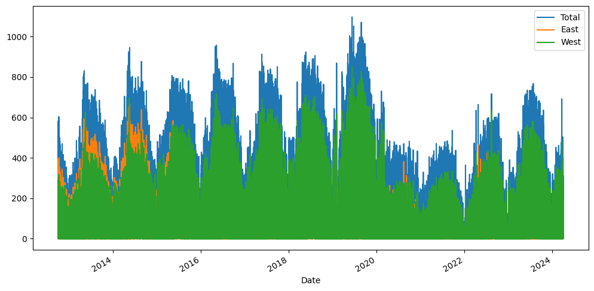
# Let us look at just the first 200 data points
title='Bicycle Crossings'
ylabel='Count'
xlabel='Date'
ax = df.iloc[:200,:].plot(figsize=(18,6),title=title)
ax.autoscale(axis='x',tight=True)
ax.set(xlabel=xlabel, ylabel=ylabel);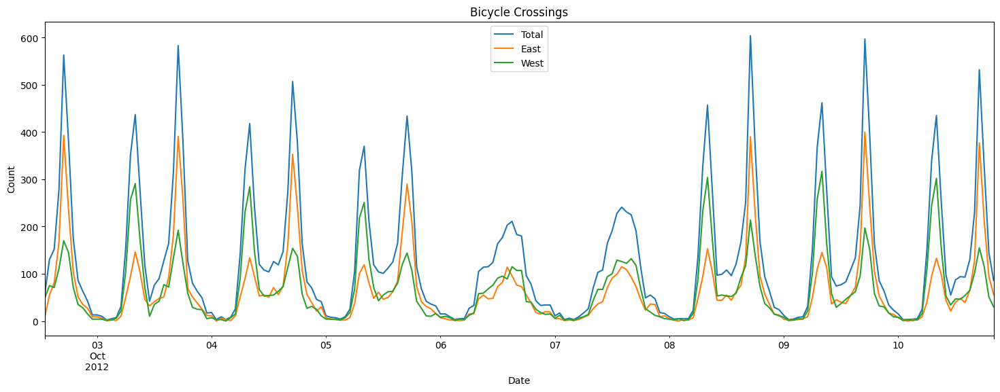
resample() is a time-based groupby pandas has a simple, powerful, and efficient functionality for performing resampling operations during frequency conversion (e.g., converting secondly data into 5-minutely data). This is extremely common in, but not limited to, financial applications.
The resample function is very flexible and allows you to specify many different parameters to control the frequency conversion and resampling operation.
Many functions are available as a method of the returned object, including sum, mean, std, sem, max, min, median, first, last, ohlc.
| Alias | Description |
|---|---|
| B | business day frequency |
| D | calendar day frequency |
| W | weekly frequency |
| M | month end frequency |
| SM | semi-month end frequency (15th and end of month) |
| BM | business month end frequency |
| MS | month start frequency |
| Q | quarter end frequency |
| A, Y | year end frequency |
| H | hourly frequency |
| T, min | minutely frequency |
| S | secondly frequency |
| N | nanoseconds |
# Let us resample the data to be monthly
df.resample(rule='ME').sum().plot(figsize = (18,6));C:\Users\user\AppData\Local\Temp\ipykernel_19996\2536642628.py:3: FutureWarning: 'M' is deprecated and will be removed in a future version, please use 'ME' instead.
df.resample(rule='M').sum().plot(figsize = (18,6));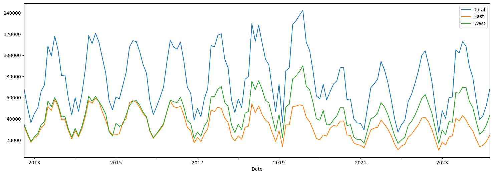
# Let us examine monthly data
# We create a new monthly dataframe
df_monthly = df.resample(rule='ME').sum()C:\Users\user\AppData\Local\Temp\ipykernel_19996\1146263502.py:4: FutureWarning: 'M' is deprecated and will be removed in a future version, please use 'ME' instead.
df_monthly = df.resample(rule='M').sum()# Just to keep our analysis clean and be able to understand concepts,
# we will limit ourselves to pre-Covid data
df_precovid = df_monthly[df_monthly.index < pd.to_datetime('2019-12-31')]df_precovid.plot(figsize = (18,6));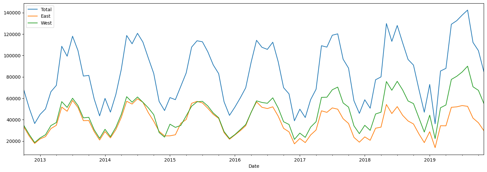
# We suppress some warnings pandas produces, more for
# visual cleanliness than any other reason
pd.options.mode.chained_assignment = None df_monthly| Total | East | West | |
|---|---|---|---|
| Date | |||
| 2012-10-31 | 67633.0 | 33096.0 | 34537.0 |
| 2012-11-30 | 50647.0 | 24585.0 | 26062.0 |
| 2012-12-31 | 36369.0 | 17761.0 | 18608.0 |
| 2013-01-31 | 44884.0 | 21974.0 | 22910.0 |
| 2013-02-28 | 50027.0 | 24129.0 | 25898.0 |
| ... | ... | ... | ... |
| 2023-11-30 | 58015.0 | 20427.0 | 37588.0 |
| 2023-12-31 | 39303.0 | 13852.0 | 25451.0 |
| 2024-01-31 | 43027.0 | 14722.0 | 28305.0 |
| 2024-02-29 | 52749.0 | 18611.0 | 34138.0 |
| 2024-03-31 | 67998.0 | 24659.0 | 43339.0 |
138 rows × 3 columns
Source: https://pandas.pydata.org/docs/user_guide/timeseries.html#indexing
Using the index for time series provides us the advantage of being able to filter easily by year or month.
for example, you can do df.loc['2017'] to list all observations for 2017, or df.loc['2017-02'], or df.loc['2017-02-15'].
df.loc['2017-02-15']| Total | East | West | |
|---|---|---|---|
| Date | |||
| 2017-02-15 00:00:00 | 4.0 | 3.0 | 1.0 |
| 2017-02-15 01:00:00 | 3.0 | 1.0 | 2.0 |
| 2017-02-15 02:00:00 | 0.0 | 0.0 | 0.0 |
| 2017-02-15 03:00:00 | 2.0 | 0.0 | 2.0 |
| 2017-02-15 04:00:00 | 2.0 | 1.0 | 1.0 |
| 2017-02-15 05:00:00 | 18.0 | 8.0 | 10.0 |
| 2017-02-15 06:00:00 | 60.0 | 45.0 | 15.0 |
| 2017-02-15 07:00:00 | 188.0 | 117.0 | 71.0 |
| 2017-02-15 08:00:00 | 262.0 | 152.0 | 110.0 |
| 2017-02-15 09:00:00 | 147.0 | 68.0 | 79.0 |
| 2017-02-15 10:00:00 | 49.0 | 25.0 | 24.0 |
| 2017-02-15 11:00:00 | 23.0 | 13.0 | 10.0 |
| 2017-02-15 12:00:00 | 12.0 | 7.0 | 5.0 |
| 2017-02-15 13:00:00 | 22.0 | 9.0 | 13.0 |
| 2017-02-15 14:00:00 | 17.0 | 2.0 | 15.0 |
| 2017-02-15 15:00:00 | 47.0 | 22.0 | 25.0 |
| 2017-02-15 16:00:00 | 99.0 | 29.0 | 70.0 |
| 2017-02-15 17:00:00 | 272.0 | 54.0 | 218.0 |
| 2017-02-15 18:00:00 | 181.0 | 48.0 | 133.0 |
| 2017-02-15 19:00:00 | 76.0 | 16.0 | 60.0 |
| 2017-02-15 20:00:00 | 43.0 | 14.0 | 29.0 |
| 2017-02-15 21:00:00 | 15.0 | 5.0 | 10.0 |
| 2017-02-15 22:00:00 | 16.0 | 6.0 | 10.0 |
| 2017-02-15 23:00:00 | 3.0 | 1.0 | 2.0 |
df.loc['2018']| Total | East | West | |
|---|---|---|---|
| Date | |||
| 2018-01-01 00:00:00 | 28.0 | 14.0 | 14.0 |
| 2018-01-01 01:00:00 | 16.0 | 2.0 | 14.0 |
| 2018-01-01 02:00:00 | 8.0 | 4.0 | 4.0 |
| 2018-01-01 03:00:00 | 2.0 | 2.0 | 0.0 |
| 2018-01-01 04:00:00 | 0.0 | 0.0 | 0.0 |
| ... | ... | ... | ... |
| 2018-12-31 19:00:00 | 14.0 | 9.0 | 5.0 |
| 2018-12-31 20:00:00 | 26.0 | 12.0 | 14.0 |
| 2018-12-31 21:00:00 | 14.0 | 7.0 | 7.0 |
| 2018-12-31 22:00:00 | 7.0 | 3.0 | 4.0 |
| 2018-12-31 23:00:00 | 13.0 | 7.0 | 6.0 |
8759 rows × 3 columns
df.loc['2018-02']| Total | East | West | |
|---|---|---|---|
| Date | |||
| 2018-02-01 00:00:00 | 8.0 | 2.0 | 6.0 |
| 2018-02-01 01:00:00 | 3.0 | 2.0 | 1.0 |
| 2018-02-01 02:00:00 | 0.0 | 0.0 | 0.0 |
| 2018-02-01 03:00:00 | 6.0 | 3.0 | 3.0 |
| 2018-02-01 04:00:00 | 8.0 | 5.0 | 3.0 |
| ... | ... | ... | ... |
| 2018-02-28 19:00:00 | 77.0 | 17.0 | 60.0 |
| 2018-02-28 20:00:00 | 35.0 | 7.0 | 28.0 |
| 2018-02-28 21:00:00 | 32.0 | 14.0 | 18.0 |
| 2018-02-28 22:00:00 | 13.0 | 2.0 | 11.0 |
| 2018-02-28 23:00:00 | 9.0 | 3.0 | 6.0 |
672 rows × 3 columns
You can also use the regular methods for filtering date ranges
df[(df.index > pd.to_datetime('1/31/2020')) & (df.index < pd.to_datetime('1/1/2022'))]| Total | East | West | |
|---|---|---|---|
| Date | |||
| 2020-01-31 01:00:00 | 1.0 | 0.0 | 1.0 |
| 2020-01-31 02:00:00 | 0.0 | 0.0 | 0.0 |
| 2020-01-31 03:00:00 | 0.0 | 0.0 | 0.0 |
| 2020-01-31 04:00:00 | 8.0 | 6.0 | 2.0 |
| 2020-01-31 05:00:00 | 14.0 | 7.0 | 7.0 |
| ... | ... | ... | ... |
| 2021-12-31 19:00:00 | 0.0 | 0.0 | 0.0 |
| 2021-12-31 20:00:00 | 0.0 | 0.0 | 0.0 |
| 2021-12-31 21:00:00 | 0.0 | 0.0 | 0.0 |
| 2021-12-31 22:00:00 | 0.0 | 0.0 | 0.0 |
| 2021-12-31 23:00:00 | 0.0 | 0.0 | 0.0 |
16821 rows × 3 columns
Sometimes, the date may be contained in a column.
In such cases, we filter as follows:
# We create a temporary dataframe to illustrate
temporary_df = df.loc['2017-01'].copy()
temporary_df.reset_index(inplace = True)
temporary_df| Date | Total | East | West | |
|---|---|---|---|---|
| 0 | 2017-01-01 00:00:00 | 5.0 | 0.0 | 5.0 |
| 1 | 2017-01-01 01:00:00 | 19.0 | 5.0 | 14.0 |
| 2 | 2017-01-01 02:00:00 | 1.0 | 1.0 | 0.0 |
| 3 | 2017-01-01 03:00:00 | 2.0 | 0.0 | 2.0 |
| 4 | 2017-01-01 04:00:00 | 1.0 | 0.0 | 1.0 |
| ... | ... | ... | ... | ... |
| 739 | 2017-01-31 19:00:00 | 116.0 | 27.0 | 89.0 |
| 740 | 2017-01-31 20:00:00 | 64.0 | 25.0 | 39.0 |
| 741 | 2017-01-31 21:00:00 | 32.0 | 19.0 | 13.0 |
| 742 | 2017-01-31 22:00:00 | 19.0 | 4.0 | 15.0 |
| 743 | 2017-01-31 23:00:00 | 15.0 | 6.0 | 9.0 |
744 rows × 4 columns
You can use resample on a column instead of the index by providing the on argument
temporary_df.resample(on='Date', rule="ME").sum()| Total | East | West | |
|---|---|---|---|
| Date | |||
| 2017-01-31 | 49805.0 | 22388.0 | 27417.0 |
How to groupby day of the week, or month
In such cases, we filter as follows:
# You can filter for a particular day, day of the week, or month
temporary_df[temporary_df['Date'].dt.day==2]| Date | Total | East | West | |
|---|---|---|---|---|
| 24 | 2017-01-02 00:00:00 | 1.0 | 0.0 | 1.0 |
| 25 | 2017-01-02 01:00:00 | 1.0 | 0.0 | 1.0 |
| 26 | 2017-01-02 02:00:00 | 1.0 | 1.0 | 0.0 |
| 27 | 2017-01-02 03:00:00 | 1.0 | 1.0 | 0.0 |
| 28 | 2017-01-02 04:00:00 | 1.0 | 0.0 | 1.0 |
| 29 | 2017-01-02 05:00:00 | 4.0 | 2.0 | 2.0 |
| 30 | 2017-01-02 06:00:00 | 11.0 | 7.0 | 4.0 |
| 31 | 2017-01-02 07:00:00 | 17.0 | 13.0 | 4.0 |
| 32 | 2017-01-02 08:00:00 | 29.0 | 17.0 | 12.0 |
| 33 | 2017-01-02 09:00:00 | 32.0 | 21.0 | 11.0 |
| 34 | 2017-01-02 10:00:00 | 43.0 | 20.0 | 23.0 |
| 35 | 2017-01-02 11:00:00 | 47.0 | 21.0 | 26.0 |
| 36 | 2017-01-02 12:00:00 | 55.0 | 27.0 | 28.0 |
| 37 | 2017-01-02 13:00:00 | 58.0 | 27.0 | 31.0 |
| 38 | 2017-01-02 14:00:00 | 73.0 | 36.0 | 37.0 |
| 39 | 2017-01-02 15:00:00 | 66.0 | 37.0 | 29.0 |
| 40 | 2017-01-02 16:00:00 | 54.0 | 25.0 | 29.0 |
| 41 | 2017-01-02 17:00:00 | 45.0 | 19.0 | 26.0 |
| 42 | 2017-01-02 18:00:00 | 31.0 | 16.0 | 15.0 |
| 43 | 2017-01-02 19:00:00 | 17.0 | 4.0 | 13.0 |
| 44 | 2017-01-02 20:00:00 | 12.0 | 6.0 | 6.0 |
| 45 | 2017-01-02 21:00:00 | 15.0 | 8.0 | 7.0 |
| 46 | 2017-01-02 22:00:00 | 4.0 | 3.0 | 1.0 |
| 47 | 2017-01-02 23:00:00 | 5.0 | 3.0 | 2.0 |
For month, use temporary_df['Date'].dt.month, and for day of week (Sun, Mon etc) use temporary_df['Date'].dt.weekday
# Day of week
temporary_df.groupby(temporary_df['Date'].dt.weekday).count()| Date | Total | East | West | |
|---|---|---|---|---|
| Date | ||||
| 0 | 120 | 120 | 120 | 120 |
| 1 | 120 | 120 | 120 | 120 |
| 2 | 96 | 96 | 96 | 96 |
| 3 | 96 | 96 | 96 | 96 |
| 4 | 96 | 96 | 96 | 96 |
| 5 | 96 | 96 | 96 | 96 |
| 6 | 120 | 120 | 120 | 120 |
# Month
temporary_df[temporary_df['Date'].dt.month == 1]
# or use temporary_df['Date'].dt.day and year as well| Date | Total | East | West | |
|---|---|---|---|---|
| 0 | 2017-01-01 00:00:00 | 5.0 | 0.0 | 5.0 |
| 1 | 2017-01-01 01:00:00 | 19.0 | 5.0 | 14.0 |
| 2 | 2017-01-01 02:00:00 | 1.0 | 1.0 | 0.0 |
| 3 | 2017-01-01 03:00:00 | 2.0 | 0.0 | 2.0 |
| 4 | 2017-01-01 04:00:00 | 1.0 | 0.0 | 1.0 |
| ... | ... | ... | ... | ... |
| 739 | 2017-01-31 19:00:00 | 116.0 | 27.0 | 89.0 |
| 740 | 2017-01-31 20:00:00 | 64.0 | 25.0 | 39.0 |
| 741 | 2017-01-31 21:00:00 | 32.0 | 19.0 | 13.0 |
| 742 | 2017-01-31 22:00:00 | 19.0 | 4.0 | 15.0 |
| 743 | 2017-01-31 23:00:00 | 15.0 | 6.0 | 9.0 |
744 rows × 4 columns
temporary_df.groupby(pd.Grouper(key='Date', freq="ME")).count()| Total | East | West | |
|---|---|---|---|
| Date | |||
| 2017-01-31 | 744 | 744 | 744 |
You can use pd.Grouper if you want use groupby on a time series
It gives you the same result as resample.
df.groupby(pd.Grouper(freq="ME")).sum()| Total | East | West | |
|---|---|---|---|
| Date | |||
| 2012-10-31 | 67633.0 | 33096.0 | 34537.0 |
| 2012-11-30 | 50647.0 | 24585.0 | 26062.0 |
| 2012-12-31 | 36369.0 | 17761.0 | 18608.0 |
| 2013-01-31 | 44884.0 | 21974.0 | 22910.0 |
| 2013-02-28 | 50027.0 | 24129.0 | 25898.0 |
| ... | ... | ... | ... |
| 2023-11-30 | 58015.0 | 20427.0 | 37588.0 |
| 2023-12-31 | 39303.0 | 13852.0 | 25451.0 |
| 2024-01-31 | 43027.0 | 14722.0 | 28305.0 |
| 2024-02-29 | 52749.0 | 18611.0 | 34138.0 |
| 2024-03-31 | 67998.0 | 24659.0 | 43339.0 |
138 rows × 3 columns
# The below gives us the same result
df.resample("ME").sum()| Total | East | West | |
|---|---|---|---|
| Date | |||
| 2012-10-31 | 67633.0 | 33096.0 | 34537.0 |
| 2012-11-30 | 50647.0 | 24585.0 | 26062.0 |
| 2012-12-31 | 36369.0 | 17761.0 | 18608.0 |
| 2013-01-31 | 44884.0 | 21974.0 | 22910.0 |
| 2013-02-28 | 50027.0 | 24129.0 | 25898.0 |
| ... | ... | ... | ... |
| 2023-11-30 | 58015.0 | 20427.0 | 37588.0 |
| 2023-12-31 | 39303.0 | 13852.0 | 25451.0 |
| 2024-01-31 | 43027.0 | 14722.0 | 28305.0 |
| 2024-02-29 | 52749.0 | 18611.0 | 34138.0 |
| 2024-03-31 | 67998.0 | 24659.0 | 43339.0 |
138 rows × 3 columns
from statsmodels.graphics.tsaplots import month_plot, quarter_plot# Plot the months to see trends over months
month_plot(df_precovid.Total);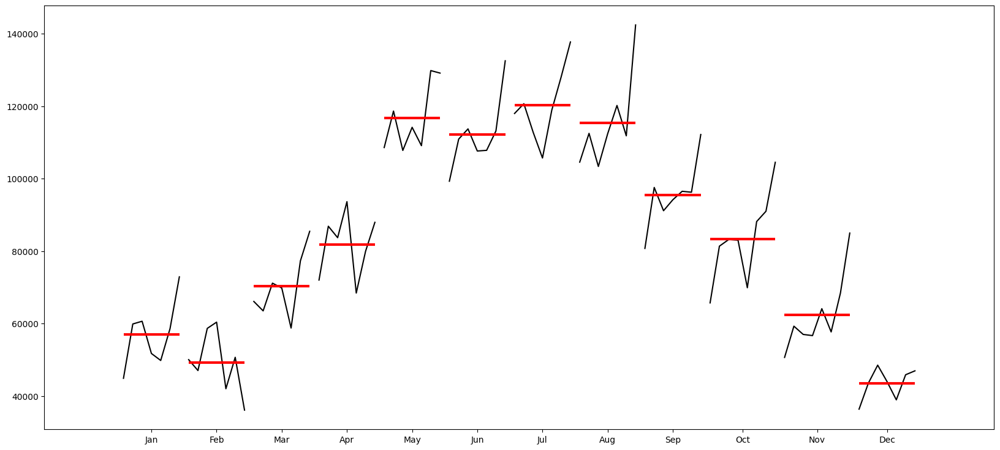
# Plot the quarter to see trends over quarters
quarter_plot(df_precovid.resample(rule='QE').Total.sum());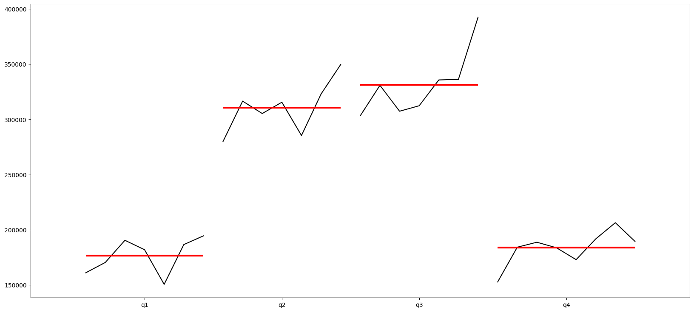
When we decompose a time series, we are essentially expressing a belief that our data has several discrete components to it, each which can be isolated and studied separately.
Generally, time series data is split into 3 components: error, trend and seasonality (hence ‘ETS Decomposition’):
1. Seasonal component
2. Trend/cycle component
2. Residual, or error component which is not explained by the above two.
Multiplicative vs Additive Decomposition
If we assume an additive decomposition, then we can write:
\(y_t = S_t + T_t + R_t\)
where \(y_t\) is the data,
- \(S_t\) is the seasonal component,
- \(T_t\) is the trend-cycle component, and
- \(R_t\) is the remainder component at time period \(t\).
A multiplicative decomposition would be similarly written
\(y_t = S_t * T_t * R_t\)
The additive decomposition is the most appropriate if the magnitude of the seasonal fluctuations, or the variation around the trend-cycle, does not vary with the level of the time series.
When the variation in the seasonal pattern, or the variation around the trend-cycle, appears to be proportional to the level of the time series, then a multiplicative decomposition is more appropriate. Multiplicative decompositions are common with economic time series.
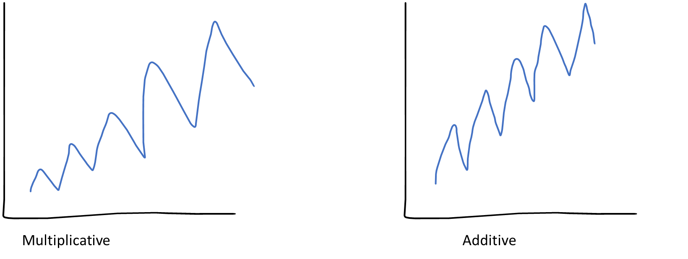
The Statsmodels library gives us the functionality to decompose time series. Below, we decompose the time series using multiplicative decomposition. Let us spend a couple of moments looking at the chart below. Note that the first panel, ‘Total’, is the sum of the other three, ie Trend, Seasonal and Resid.
# Now we decompose our time series
import matplotlib.pyplot as plt
from statsmodels.tsa.seasonal import seasonal_decompose
# We use the multiplicative model
result = seasonal_decompose(df_precovid['Total'], model = 'multiplicative')
plt.rcParams['figure.figsize'] = (20, 9)
result.plot();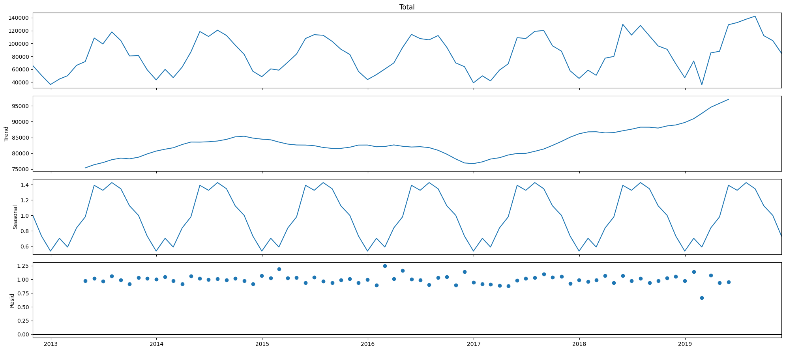
# Each of the above components are contained in our `result`
# object as trend, seasonal and error.
# Let us put them in a dataframe
ets = pd.DataFrame({'Total': df_precovid['Total'],
'trend': result.trend,
'seasonality': result.seasonal,
'error': result.resid}).head(20)
# ets.to_excel('ets_mul.xlsx')
ets| Total | trend | seasonality | error | |
|---|---|---|---|---|
| Date | ||||
| 2012-10-31 | 65695.0 | NaN | 1.001160 | NaN |
| 2012-11-30 | 50647.0 | NaN | 0.731912 | NaN |
| 2012-12-31 | 36369.0 | NaN | 0.536130 | NaN |
| 2013-01-31 | 44884.0 | NaN | 0.702895 | NaN |
| 2013-02-28 | 50027.0 | NaN | 0.588604 | NaN |
| 2013-03-31 | 66089.0 | NaN | 0.837828 | NaN |
| 2013-04-30 | 71998.0 | 75386.958333 | 0.980757 | 0.973785 |
| 2013-05-31 | 108574.0 | 76398.625000 | 1.392398 | 1.020650 |
| 2013-06-30 | 99280.0 | 77057.250000 | 1.327268 | 0.970710 |
| 2013-07-31 | 117974.0 | 77981.125000 | 1.427836 | 1.059543 |
| 2013-08-31 | 104549.0 | 78480.583333 | 1.347373 | 0.988712 |
| 2013-09-30 | 80729.0 | 78247.375000 | 1.125840 | 0.916396 |
| 2013-10-31 | 81352.0 | 78758.291667 | 1.001160 | 1.031736 |
| 2013-11-30 | 59270.0 | 79796.916667 | 0.731912 | 1.014822 |
| 2013-12-31 | 43553.0 | 80700.958333 | 0.536130 | 1.006629 |
| 2014-01-31 | 59873.0 | 81297.708333 | 0.702895 | 1.047762 |
| 2014-02-28 | 47025.0 | 81740.875000 | 0.588604 | 0.977386 |
| 2014-03-31 | 63494.0 | 82772.958333 | 0.837828 | 0.915565 |
| 2014-04-30 | 86855.0 | 83550.500000 | 0.980757 | 1.059948 |
| 2014-05-31 | 118644.0 | 83531.833333 | 1.392398 | 1.020071 |
# Check if things work in the multiplicative model
print('Total = ', 71998.0)
print('Trend * Factor for Seasonality * Factor for Error =',75386.958333 * 0.980757 * 0.973785)Total = 71998.0
Trend * Factor for Seasonality * Factor for Error = 71998.04732763417We do the same thing as before, except that we change the model to be additive.
result = seasonal_decompose(df_precovid['Total'], model = 'additive')
plt.rcParams['figure.figsize'] = (20, 9)
result.plot();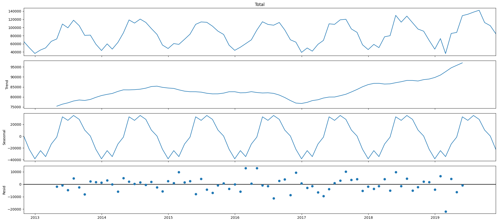
Here, an additive model seems to make sense. This is because the residuals seem to be better centered around zero.
Obtaining the components numerically
While this is great from a visual or graphical perspective, sometimes we may need to get the actual numbers for the three decomposed components. We can do so easily - the code below provides us this data in a dataframe.
# Each of the above components are contained in our `result`
# object as trend, seasonal and error.
# Let us put them in a dataframe
ets = pd.DataFrame({'Total': df_precovid['Total'],
'trend': result.trend,
'seasonality': result.seasonal,
'error': result.resid}).head(20)
# ets.to_excel('ets_add.xlsx')
ets| Total | trend | seasonality | error | |
|---|---|---|---|---|
| Date | ||||
| 2012-10-31 | 65695.0 | NaN | 315.920635 | NaN |
| 2012-11-30 | 50647.0 | NaN | -22171.933532 | NaN |
| 2012-12-31 | 36369.0 | NaN | -38436.746032 | NaN |
| 2013-01-31 | 44884.0 | NaN | -24517.440476 | NaN |
| 2013-02-28 | 50027.0 | NaN | -34696.308532 | NaN |
| 2013-03-31 | 66089.0 | NaN | -13329.627976 | NaN |
| 2013-04-30 | 71998.0 | 75386.958333 | -1536.224206 | -1852.734127 |
| 2013-05-31 | 108574.0 | 76398.625000 | 32985.115079 | -809.740079 |
| 2013-06-30 | 99280.0 | 77057.250000 | 26951.087302 | -4728.337302 |
| 2013-07-31 | 117974.0 | 77981.125000 | 35276.733135 | 4716.141865 |
| 2013-08-31 | 104549.0 | 78480.583333 | 28635.517857 | -2567.101190 |
| 2013-09-30 | 80729.0 | 78247.375000 | 10523.906746 | -8042.281746 |
| 2013-10-31 | 81352.0 | 78758.291667 | 315.920635 | 2277.787698 |
| 2013-11-30 | 59270.0 | 79796.916667 | -22171.933532 | 1645.016865 |
| 2013-12-31 | 43553.0 | 80700.958333 | -38436.746032 | 1288.787698 |
| 2014-01-31 | 59873.0 | 81297.708333 | -24517.440476 | 3092.732143 |
| 2014-02-28 | 47025.0 | 81740.875000 | -34696.308532 | -19.566468 |
| 2014-03-31 | 63494.0 | 82772.958333 | -13329.627976 | -5949.330357 |
| 2014-04-30 | 86855.0 | 83550.500000 | -1536.224206 | 4840.724206 |
| 2014-05-31 | 118644.0 | 83531.833333 | 32985.115079 | 2127.051587 |
ets.describe()| Total | trend | seasonality | error | |
|---|---|---|---|---|
| count | 20.000000 | 14.000000 | 20.000000 | 14.000000 |
| mean | 72844.050000 | 79692.997024 | -5069.362252 | -284.346372 |
| std | 25785.957067 | 2640.000168 | 25620.440647 | 3935.011207 |
| min | 36369.000000 | 75386.958333 | -38436.746032 | -8042.281746 |
| 25% | 50492.000000 | 78047.687500 | -24517.440476 | -2388.509425 |
| 50% | 65892.000000 | 79277.604167 | -7432.926091 | 634.610615 |
| 75% | 89961.250000 | 81630.083333 | 14630.701885 | 2240.103671 |
| max | 118644.000000 | 83550.500000 | 35276.733135 | 4840.724206 |
What is this useful for?
- Time series decomposition is primarily useful for studying time series data, and exploring historical trends over time.
- It is also useful for calculating ‘seasonally adjusted’ numbers, which is really just the trend number. The trend has no seasonality.
- Seasonally adjusted number = \(y_t - S_t = T_t + R_t\) - Note that seasons are different from cycles. Cycles have no fixed length, and we can never be sure of when they begin, peak and end. The timing of cycles is unpredictable.
Moving averages are an easy way to understand and describe time series.
By using a sliding window along which observations are averaged, they can suppress seasonality and noise, and expose the trend.
Moving averages are not generally used for forecasting, and don’t inform us about the future behavior of our time series. Their huge advantage is they are simple to understand, and explain, and get to a high level view of what is in the data.
Simple Moving Averages
Simple moving averages (SMA) tend to even out seasonality, and offer an easy way to examine the trend. Consider the 6 month and 12 month moving averages in the graphic below. SMAs are difficult to use for forecasting, and will lag by the window size.
Exponentially Weighted Moving Average (EWMA)
EWMA is a more advanced method than SMA, and puts more weight on values that occurred more recently. Forecasts produced using exponential smoothing methods are weighted averages of past observations, with the weights decaying exponentially as the observations get older. The more recent the observation, the higher the associated weight.
This framework generates reliable forecasts quickly and for a wide range of time series, which is a great advantage and of major importance to applications in industry.
EWMA can be easily calculated using the ewm() function in pandas. The parameter adjust controls how the EWMA term is calculated.
When adjust=True (default), the EW function is calculated using weights \(w_i = (1 - \alpha)^i\). For example, the EW moving average of the series [\(x_0, x_1, ..., x_t\)] would be: \(y_t = \frac{x_t + (1 - \alpha)x_{t-1} + (1 - \alpha)^2 x_{t-2} + ... + (1 -
\alpha)^t x_0}{1 + (1 - \alpha) + (1 - \alpha)^2 + ... + (1 - \alpha)^t}\)
When adjust=False, the exponentially weighted function is calculated recursively:
\(\begin{split}\begin{split}
y_0 &= x_0\\
y_t &= (1 - \alpha) y_{t-1} + \alpha x_t,
\end{split}\end{split}\)
(Source: Pandas documentation at https://pandas.pydata.org/docs/reference/api/pandas.DataFrame.ewm.html)
The alpha parameter can be specified in the formula in one of four ways: - Alpha specifies the smoothing factor directly. Specify smoothing factor \(\alpha\) directly \(0 < \alpha \leq 1\) - Span corresponds to what is commonly called an “N-day Exponentially Weighted Moving Average”. Specify decay in terms of span \(\alpha = 2 / (span + 1)\) , for \(span \geq 1\).
- COM (Center of mass): Specify decay in terms of center of mass \(\alpha = 1 / (1 + com)\) , for \(com \geq 0\). - Half-life is the period of time for the exponential weight to reduce to one half. Specify decay in terms of half-life \(\alpha = 1 - \exp\left(-\ln(2) / halflife\right)\) , for \(halflife > 0\). If times is specified, the time unit (str or timedelta) over which an observation decays to half its value. Only applicable to mean(), and halflife value will not apply to the other functions.
.
# let us look at rolling averages & EWM together
new_df = df_precovid[['Total']]
new_df['Moving_Avg_6m'] = new_df['Total'].rolling(window=6).mean()
new_df['Moving_Avg_12m'] = new_df['Total'].rolling(window=12).mean()new_df['EWMA12'] = new_df['Total'].ewm(span=12,adjust=False).mean()
# Note that available EW functions include mean(), var(), std(), corr(), cov().
new_df.plot();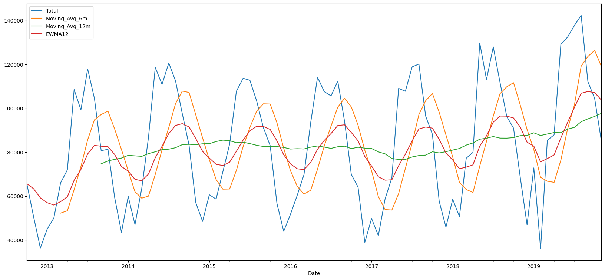
# new_df.to_excel('temp.xlsx')2/(12+1) 0.15384615384615385In the graph above, the red line is the EWMA with span=12, or alpha=2/(12+1) ≈ 0.15.
EWMA has a single smoothing parameter, \(\alpha\), and does not account for seasonality or trend. It is only suitable for data with no clear trend or seasonal pattern.
Note that we haven’t talked about forecasting yet – that comes next. We have so far only ‘fitted’ the EWMA model to a given time series. Know that EWMA is just a weighted average, with more (or less, depending on alpha) weight to recent observations.
What is Stationarity?
A stationary series has constant mean and variance over time. Which means there is no trend, and no seasonality either. Stationarity is important for forecasting time series because if the mean and variance are changing with the passage of time, any estimates using a regression model will start to drift very quickly as we forecast into the future.
If a time series is not stationary, we need to ‘difference’ it with itself so it becomes stationary. Differencing means you subtract the previous observation from the current observation.
How do we know if a series is stationary?
- We can examine stationarity by visually inspecting the time series.
- Or, we can run a statistical test (The Augmented Dickey-Fuller test) to check for stationarity.
Fortunately, an ARIMA model takes care of most issues with non-stationarity for us and we do not need to adjust it. However, if we are using ARMA, we do need to ensure that our series is stationary.
Let us look at two real time series to get a sense of stationarity. We import some stock price data, and also look at stock price returns. We just pick the S&P500 index, though we could have picked any listed company.
# Let us get some data. We download the daily time series for the S&P500 for 30 months
import yfinance as yf
SPY = yf.download('SPY', start = '2013-01-01', end = '2015-06-30')[*********************100%%**********************] 1 of 1 completed# Clean up
SPY.index = pd.DatetimeIndex(SPY.index) # Set index
SPY = SPY.asfreq('B') # This creates rows for any missing dates
SPY.fillna(method = 'bfill', inplace=True) # Fills missing dates with last observationSPY.info()<class 'pandas.core.frame.DataFrame'>
DatetimeIndex: 649 entries, 2013-01-02 to 2015-06-29
Freq: B
Data columns (total 6 columns):
# Column Non-Null Count Dtype
--- ------ -------------- -----
0 Open 649 non-null float64
1 High 649 non-null float64
2 Low 649 non-null float64
3 Close 649 non-null float64
4 Adj Close 649 non-null float64
5 Volume 649 non-null float64
dtypes: float64(6)
memory usage: 35.5 KBExample of stationary vs non-stationary time series
The top panel shows stock returns, that appear to have a mean close to zero. The bottom is stock prices, which appear to have a trend
SPY['Returns'] = (SPY['Close'].shift(1) / SPY['Close']) - 1
SPY[['Returns']].plot(figsize = (22,6));
SPY[['Close']].plot(figsize = (22,6));
Making a series stationary
If data is not stationary, ‘differencing’ can make it stationary. Differencing is subtracting the prior observation from the current one.
\(Difference_t = Observation_t - Observation_{t-1}\)
If the differenced time series is not stationary either, we can continue differencing till we get to a stationary time series.
The number of times we have to difference a time series to get to stationarity is the ‘order’ of differencing. This reflects the \(d\) parameter in ARIMA.
We can difference a series using Pandas series.diff() function, however there are libraries available that will automatically use an appropriate value for the parameter d.
We can run the Dickey Fuller test for stationarity - If p-value > 0.05, we decide that the dataset is not stationary. Let us run this test against our stock price time series.
When we run this test in Python, we get a cryptic output in the form of a tuple. The help text for this function shows the complete explanation for how to interpret the results:
Returns
-------
adf : float
The test statistic.
pvalue : float
MacKinnon's approximate p-value based on MacKinnon (1994, 2010).
usedlag : int
The number of lags used.
nobs : int
The number of observations used for the ADF regression and calculation
of the critical values.
critical values : dict
Critical values for the test statistic at the 1 %, 5 %, and 10 %
levels. Based on MacKinnon (2010).
icbest : float
The maximized information criterion if autolag is not None.
resstore : ResultStore, optional
A dummy class with results attached as attributes.For us, the second value is the p-value that we are interested in. If this is > 0.05, we decide the series is not stationary.
# Test the stock price data
from statsmodels.tsa.stattools import adfuller
adfuller(SPY['Close'])(-1.6928673813673563,
0.4347911128784576,
0,
648,
{'1%': -3.4404817800778034,
'5%': -2.866010569916275,
'10%': -2.569150763698369},
2126.1002309138994)# Test the stock returns data
adfuller(SPY['Returns'].dropna())(-26.546757517762995,
0.0,
0,
647,
{'1%': -3.4404975024933813,
'5%': -2.8660174956716795,
'10%': -2.569154453750397},
-4424.286299515888)Autocorrelation in a time series is the correlation of an observation to the observations that precede it. Autocorrelation is the basis for being able to use auto regression to forecast a time series.
To calculate autocorrelation for a series, we shift the series by one step, and calculate the correlation between the two. We keep increasing the number of steps to see correlations with past periods.
Fortunately, libraries exist that allow us to do these tedious calculations and present a tidy graph.
Next, we will look at Autocorrelation plots for both our stock price series, and also the total number of bicycle crossings in Seattle.
# Autocorrelation and partial autocorrelation plots for stock prices
plt.rc("figure", figsize=(18,4))
from statsmodels.graphics.tsaplots import plot_acf,plot_pacf
plot_acf(SPY['Close']);
plot_pacf(SPY['Close']);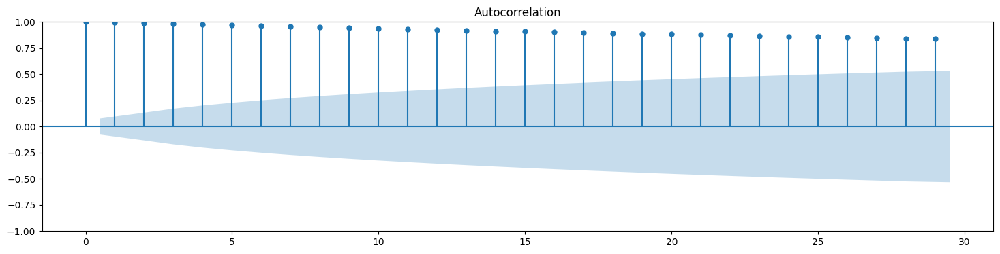
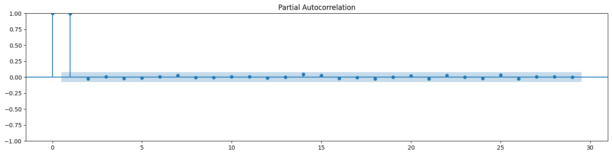
The shaded area represents the 95% confidence level.
PACF for ARIMA: - The PACF plot can be used to identify the value of p, the AR order. - The ACF plot can be used to identify the value of q, the MA order. - The interpretation of ACF and PACF plots to determine values of p & q for ARIMA can be complex.
Below, we see the ACF and PACF plots for the bicycle crossings. Their seasonality is quite visible.
# Autocorrelation and partial autocorrelation plots for stock prices
plot_acf(new_df.Total);
plot_pacf(new_df.Total);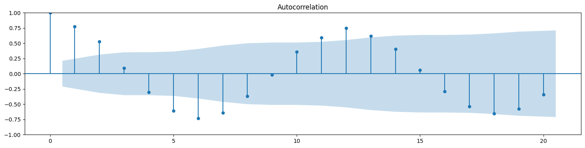
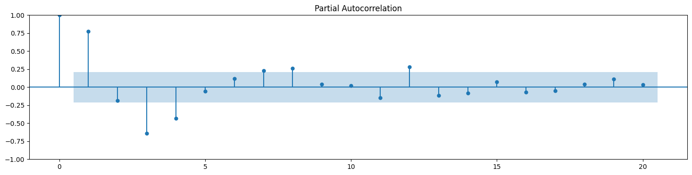
# Get raw values for auto-correlations
from statsmodels.tsa.stattools import acf
acf(new_df.Total)array([ 1. , 0.77571582, 0.52756191, 0.09556274, -0.30509232,
-0.60545323, -0.73226582, -0.64087121, -0.37044611, -0.01811217,
0.35763185, 0.59437737, 0.7515538 , 0.61992343, 0.40344956,
0.06119329, -0.28745883, -0.53888819, -0.65309667, -0.57442506])# Slightly nicer output making it easy to read lag and correlation
[(n,x ) for n, x in enumerate(acf(new_df.Total))][(0, 1.0),
(1, 0.7757158156417427),
(2, 0.5275619080263295),
(3, 0.09556274009387859),
(4, -0.30509232288765453),
(5, -0.6054532313442101),
(6, -0.732265815426328),
(7, -0.6408712113652556),
(8, -0.3704461111442763),
(9, -0.018112170681472205),
(10, 0.35763184544832965),
(11, 0.5943773727598759),
(12, 0.7515538007556243),
(13, 0.6199234263452077),
(14, 0.4034495609681654),
(15, 0.061193291548871764),
(16, -0.28745882651811744),
(17, -0.5388881889155354),
(18, -0.6530966725971313),
(19, -0.5744250570228712)]The Granger Causality tests are used to check if two time series are related with each other, specifically, given two time series, whether the time series in the second column can be used to predict the time series in the first column.
The ‘maxlag’ parameter needs to be specified and the code will identify the p-values at different lag points up to the maxlag value. If p-value<0.05 for any lag, that may be a valid predictor (or causal factor).
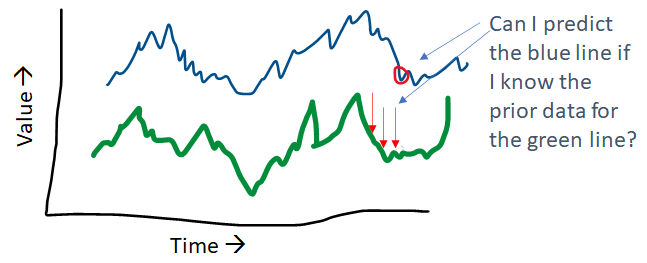
Example
This test is quite easy for us to run using statsmodels. As an example, we apply it to two separate time series, one showing the average daily temperature, and the other showing the average daily household power consumption. This data was adapted from a Kaggle dataset to create this illustration.
from statsmodels.tsa.stattools import grangercausalitytests# Data adapted from:
# https://www.kaggle.com/srinuti/residential-power-usage-3years-data-timeseries
df_elec = pd.read_csv('pwr_usage.csv')
df_elec.index = pd.DatetimeIndex(df_elec.Date, freq='W-SUN')
df_elec.drop(['Date'], axis = 1, inplace = True)
df_elec| Temp_avg | kwh | |
|---|---|---|
| Date | ||
| 2017-01-08 | 75.542857 | 106.549 |
| 2017-01-15 | 71.014286 | 129.096 |
| 2017-01-22 | 64.414286 | 68.770 |
| 2017-01-29 | 56.728571 | 71.378 |
| 2017-02-05 | 66.128571 | 107.829 |
| ... | ... | ... |
| 2019-12-08 | 74.371429 | 167.481 |
| 2019-12-15 | 61.242857 | 86.248 |
| 2019-12-22 | 50.000000 | 73.206 |
| 2019-12-29 | 60.128571 | 35.655 |
| 2020-01-05 | 7.185714 | 4.947 |
157 rows × 2 columns
# Check if Average Temperature can be used to predict kwh
grangercausalitytests(df_elec[["kwh", "Temp_avg"]], maxlag = 6);
Granger Causality
number of lags (no zero) 1
ssr based F test: F=0.1022 , p=0.7496 , df_denom=153, df_num=1
ssr based chi2 test: chi2=0.1042 , p=0.7468 , df=1
likelihood ratio test: chi2=0.1042 , p=0.7469 , df=1
parameter F test: F=0.1022 , p=0.7496 , df_denom=153, df_num=1
Granger Causality
number of lags (no zero) 2
ssr based F test: F=0.9543 , p=0.3874 , df_denom=150, df_num=2
ssr based chi2 test: chi2=1.9722 , p=0.3730 , df=2
likelihood ratio test: chi2=1.9597 , p=0.3754 , df=2
parameter F test: F=0.9543 , p=0.3874 , df_denom=150, df_num=2
Granger Causality
number of lags (no zero) 3
ssr based F test: F=1.6013 , p=0.1916 , df_denom=147, df_num=3
ssr based chi2 test: chi2=5.0327 , p=0.1694 , df=3
likelihood ratio test: chi2=4.9523 , p=0.1753 , df=3
parameter F test: F=1.6013 , p=0.1916 , df_denom=147, df_num=3
Granger Causality
number of lags (no zero) 4
ssr based F test: F=1.5901 , p=0.1801 , df_denom=144, df_num=4
ssr based chi2 test: chi2=6.7579 , p=0.1492 , df=4
likelihood ratio test: chi2=6.6129 , p=0.1578 , df=4
parameter F test: F=1.5901 , p=0.1801 , df_denom=144, df_num=4
Granger Causality
number of lags (no zero) 5
ssr based F test: F=1.2414 , p=0.2930 , df_denom=141, df_num=5
ssr based chi2 test: chi2=6.6913 , p=0.2446 , df=5
likelihood ratio test: chi2=6.5482 , p=0.2565 , df=5
parameter F test: F=1.2414 , p=0.2930 , df_denom=141, df_num=5
Granger Causality
number of lags (no zero) 6
ssr based F test: F=1.0930 , p=0.3697 , df_denom=138, df_num=6
ssr based chi2 test: chi2=7.1759 , p=0.3049 , df=6
likelihood ratio test: chi2=7.0106 , p=0.3199 , df=6
parameter F test: F=1.0930 , p=0.3697 , df_denom=138, df_num=6# Check if kwh can be used to predict Average Temperature
# While we get p<0.05 at lag 3, the result is obviously absurd
grangercausalitytests(df_elec[["Temp_avg", "kwh"]], maxlag = 6);
Granger Causality
number of lags (no zero) 1
ssr based F test: F=3.1953 , p=0.0758 , df_denom=153, df_num=1
ssr based chi2 test: chi2=3.2580 , p=0.0711 , df=1
likelihood ratio test: chi2=3.2244 , p=0.0725 , df=1
parameter F test: F=3.1953 , p=0.0758 , df_denom=153, df_num=1
Granger Causality
number of lags (no zero) 2
ssr based F test: F=2.8694 , p=0.0599 , df_denom=150, df_num=2
ssr based chi2 test: chi2=5.9301 , p=0.0516 , df=2
likelihood ratio test: chi2=5.8194 , p=0.0545 , df=2
parameter F test: F=2.8694 , p=0.0599 , df_denom=150, df_num=2
Granger Causality
number of lags (no zero) 3
ssr based F test: F=3.0044 , p=0.0324 , df_denom=147, df_num=3
ssr based chi2 test: chi2=9.4423 , p=0.0240 , df=3
likelihood ratio test: chi2=9.1642 , p=0.0272 , df=3
parameter F test: F=3.0044 , p=0.0324 , df_denom=147, df_num=3
Granger Causality
number of lags (no zero) 4
ssr based F test: F=1.3019 , p=0.2722 , df_denom=144, df_num=4
ssr based chi2 test: chi2=5.5329 , p=0.2369 , df=4
likelihood ratio test: chi2=5.4352 , p=0.2455 , df=4
parameter F test: F=1.3019 , p=0.2722 , df_denom=144, df_num=4
Granger Causality
number of lags (no zero) 5
ssr based F test: F=0.8068 , p=0.5466 , df_denom=141, df_num=5
ssr based chi2 test: chi2=4.3488 , p=0.5004 , df=5
likelihood ratio test: chi2=4.2877 , p=0.5088 , df=5
parameter F test: F=0.8068 , p=0.5466 , df_denom=141, df_num=5
Granger Causality
number of lags (no zero) 6
ssr based F test: F=0.5381 , p=0.7785 , df_denom=138, df_num=6
ssr based chi2 test: chi2=3.5328 , p=0.7396 , df=6
likelihood ratio test: chi2=3.4921 , p=0.7450 , df=6
parameter F test: F=0.5381 , p=0.7785 , df_denom=138, df_num=6In short, we don’t find any causality above, though our intuition would have told us that something should exist. Perhaps there are variables other than temperature that impact power consumption that we have not thought of.
That is the power of data - commonly held conceptions can be challenged.
(a) Simple Exponential Smoothing
In simple exponential smoothing, we reduce the time series to a single variable.
Simple exponential smoothing is suitable for forecasting data that has no clear trend or seasonal component. Obviously, this sort of data will have no pattern, so how do we forecast it? Consider two extreme approaches:
- Every future value will be equal to the average of all prior values,
- Every future value is the same as the last one.
The difference between the two extreme situations above is that in the first one, we weigh all past observations as equally important, and in the second, we give all the weight to the last observation and none to the ones prior to that.
The Simple Exponential Smoothing method takes an approach in between - it gives the most weight to the last observation, and gradually reduces the weight as we go further back in the past. It does so using a single parameter called alpha.
\(\hat{y}_{T+1|T} = \alpha y_T + \alpha(1-\alpha) y_{T-1} + \alpha(1-\alpha)^2 y_{T-2}+ \cdots\)
(Source: https://otexts.com/fpp2/ses.html)
(b) Holt’s Method - Double Exponential Smoothing
Holt extended simple exponential smoothing described above to account for a trend. This is captured in a parameter called \(\beta\).
This method involves calculating a ‘level’, with the smoothing parameter α, as well as the trend using a smoothing parameter β. These parameters are used in a way similar to what we saw with EWMA.
Because we are using two parameters, it is called ‘double exponential smoothing’.
$ \[\begin{align*} \text{Forecast equation}&& \hat{y}_{t+h|t} &= \ell_{t} + hb_{t} \\ \text{Level equation} && \ell_{t} &= \alpha y_{t} + (1 - \alpha)(\ell_{t-1} + b_{t-1})\\ \text{Trend equation} && b_{t} &= \beta^*(\ell_{t} - \ell_{t-1}) + (1 -\beta^*)b_{t-1}, \end{align*}\]$
We can specify additive or multiplicative trends. Additive trends are preferred when the level of change over time is constant. Multiplicative trends make sense when the trend varies proportional to the current values of the series.
(c) Holt-Winters’ Method - Triple Exponential Smoothing
The Holt-Winters’ seasonal method accounts for the level, as well as the trend and seasonality, with corresponding smoothing parameters α, β and γ respectively. - Level: α
- Trend: β
- Seasonality: γ
We also specify the frequency of the seasonality, i.e., the number of periods that comprise a season. For example, for quarterly data the frequency would be 4 , and for monthly data, it would be 12.
Like for trend, we can specify whether the seasonality is additive or multiplicative.
The equations for Triple Exponential Smoothing look as follows:
\(\begin{align*}
\hat{y}_{t+h|t} &= \ell_{t} + hb_{t} + s_{t+h-m(k+1)} \\
\ell_{t} &= \alpha(y_{t} - s_{t-m}) + (1 - \alpha)(\ell_{t-1} + b_{t-1})\\
b_{t} &= \beta^*(\ell_{t} - \ell_{t-1}) + (1 - \beta^*)b_{t-1}\\
s_{t} &= \gamma (y_{t}-\ell_{t-1}-b_{t-1}) + (1-\gamma)s_{t-m},
\end{align*}\)
We will not cover these equations in detail as the code does everything for us. As practitioners, we need to think about the problems we can solve with this, and while being aware of the underlying logic. The code will calculate the values of \(\alpha\), \(\beta\) and \(\gamma\) and use these in the equations above to make predictions.
When to go beyond classical methods: Exponential Smoothing and its Holt-Winters extension are excellent for single series with clear trend and seasonality. For batch forecasting across hundreds of series (e.g., SKU-level demand planning), the
statsforecastlibrary wraps these same algorithms but runs 10–100× faster. For series with complex non-linear patterns, consider NeuralProphet (pip install neuralprophet) which combines Prophet’s seasonality decomposition with a neural residual component.
# Let us look at the index of our data frame that has the bicycle crossing data
new_df.indexDatetimeIndex(['2012-10-31', '2012-11-30', '2012-12-31', '2013-01-31',
'2013-02-28', '2013-03-31', '2013-04-30', '2013-05-31',
'2013-06-30', '2013-07-31', '2013-08-31', '2013-09-30',
'2013-10-31', '2013-11-30', '2013-12-31', '2014-01-31',
'2014-02-28', '2014-03-31', '2014-04-30', '2014-05-31',
'2014-06-30', '2014-07-31', '2014-08-31', '2014-09-30',
'2014-10-31', '2014-11-30', '2014-12-31', '2015-01-31',
'2015-02-28', '2015-03-31', '2015-04-30', '2015-05-31',
'2015-06-30', '2015-07-31', '2015-08-31', '2015-09-30',
'2015-10-31', '2015-11-30', '2015-12-31', '2016-01-31',
'2016-02-29', '2016-03-31', '2016-04-30', '2016-05-31',
'2016-06-30', '2016-07-31', '2016-08-31', '2016-09-30',
'2016-10-31', '2016-11-30', '2016-12-31', '2017-01-31',
'2017-02-28', '2017-03-31', '2017-04-30', '2017-05-31',
'2017-06-30', '2017-07-31', '2017-08-31', '2017-09-30',
'2017-10-31', '2017-11-30', '2017-12-31', '2018-01-31',
'2018-02-28', '2018-03-31', '2018-04-30', '2018-05-31',
'2018-06-30', '2018-07-31', '2018-08-31', '2018-09-30',
'2018-10-31', '2018-11-30', '2018-12-31', '2019-01-31',
'2019-02-28', '2019-03-31', '2019-04-30', '2019-05-31',
'2019-06-30', '2019-07-31', '2019-08-31', '2019-09-30',
'2019-10-31', '2019-11-30'],
dtype='datetime64[ns]', name='Date', freq='M')# Clean up the data frame, set index frequency explicitly to Monthly
# This is needed as Holt-Winters will not work otherwise
new_df.index.freq = 'M'# Let us drop an NaN entries, just in case
new_df.dropna(inplace=True)new_df| Total | Moving_Avg_6m | Moving_Avg_12m | EWMA12 | |
|---|---|---|---|---|
| Date | ||||
| 2013-09-30 | 80729.0 | 97184.000000 | 74734.583333 | 82750.448591 |
| 2013-10-31 | 81352.0 | 98743.000000 | 76039.333333 | 82535.302654 |
| 2013-11-30 | 59270.0 | 90525.666667 | 76757.916667 | 78956.025322 |
| 2013-12-31 | 43553.0 | 81237.833333 | 77356.583333 | 73509.406042 |
| 2014-01-31 | 59873.0 | 71554.333333 | 78605.666667 | 71411.497420 |
| ... | ... | ... | ... | ... |
| 2019-07-31 | 137714.0 | 101472.833333 | 91343.750000 | 100389.020732 |
| 2019-08-31 | 142414.0 | 119192.000000 | 93894.166667 | 106854.402158 |
| 2019-09-30 | 112174.0 | 123644.833333 | 95221.833333 | 107672.801826 |
| 2019-10-31 | 104498.0 | 126405.833333 | 96348.166667 | 107184.370776 |
| 2019-11-30 | 84963.0 | 119045.833333 | 97725.833333 | 103765.698349 |
75 rows × 4 columns
# Set warnings to ignore so we don't get the ugly orange boxes
import warnings
warnings.filterwarnings('ignore')# Some library imports
from statsmodels.tsa.holtwinters import SimpleExpSmoothing
from statsmodels.tsa.holtwinters import ExponentialSmoothing
from sklearn.metrics import mean_squared_error as mse# Train-test split
train_samples = int(new_df.shape[0] * 0.8)
train_set = new_df.iloc[:train_samples]
test_set = new_df.iloc[train_samples:]
print("Training set: ", train_set.shape[0])
print("Test set: ", test_set.shape[0])Training set: 60
Test set: 15# Fit model using Simple Exponential Smoothing
model = SimpleExpSmoothing(train_set['Total']).fit()predictions = model.forecast(15)# let us plot the predictions and the training values
train_set['Total'].plot(legend=True,label='Training Set')
predictions.plot(legend=True,label='Model prediction');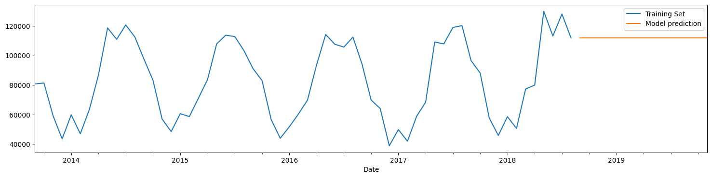
# Now we plot test (observed) values as well
train_set['Total'].plot(legend=True,label='Training Set')
test_set['Total'].plot(legend=True,label='Test Set',figsize=(16,10))
predictions.plot(legend=True,label='Model prediction');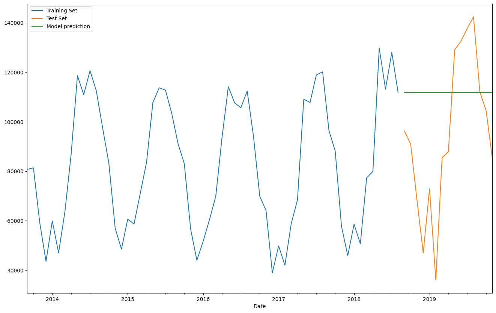
# Now we plot test (observed) values as well
# train_set['Total'].plot(legend=True,label='Training Set')
test_set['Total'].plot(legend=True,label='Test Set',figsize=(14,10))
predictions.plot(legend=True,label='Model prediction');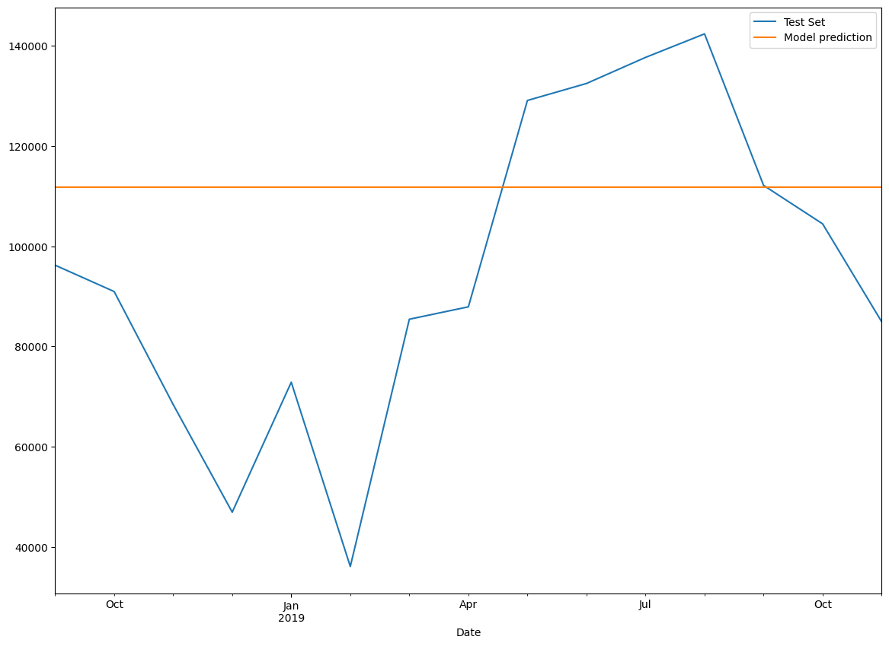
model.params{'smoothing_level': 0.995,
'smoothing_trend': nan,
'smoothing_seasonal': nan,
'damping_trend': nan,
'initial_level': 80729.0,
'initial_trend': nan,
'initial_seasons': array([], dtype=float64),
'use_boxcox': False,
'lamda': None,
'remove_bias': False}# Calculate Evaluation Metrics
y_test = test_set['Total']
y_pred = predictions
pd.DataFrame({'y_test': y_test, 'y_pred' : y_pred, 'diff':y_test - y_pred})| y_test | y_pred | diff | |
|---|---|---|---|
| 2018-09-30 | 96242.0 | 111889.675227 | -15647.675227 |
| 2018-10-31 | 90982.0 | 111889.675227 | -20907.675227 |
| 2018-11-30 | 68431.0 | 111889.675227 | -43458.675227 |
| 2018-12-31 | 46941.0 | 111889.675227 | -64948.675227 |
| 2019-01-31 | 72883.0 | 111889.675227 | -39006.675227 |
| 2019-02-28 | 36099.0 | 111889.675227 | -75790.675227 |
| 2019-03-31 | 85457.0 | 111889.675227 | -26432.675227 |
| 2019-04-30 | 87932.0 | 111889.675227 | -23957.675227 |
| 2019-05-31 | 129123.0 | 111889.675227 | 17233.324773 |
| 2019-06-30 | 132512.0 | 111889.675227 | 20622.324773 |
| 2019-07-31 | 137714.0 | 111889.675227 | 25824.324773 |
| 2019-08-31 | 142414.0 | 111889.675227 | 30524.324773 |
| 2019-09-30 | 112174.0 | 111889.675227 | 284.324773 |
| 2019-10-31 | 104498.0 | 111889.675227 | -7391.675227 |
| 2019-11-30 | 84963.0 | 111889.675227 | -26926.675227 |
from sklearn.metrics import mean_absolute_error, mean_squared_error
print('MSE = ', mean_squared_error(y_test,y_pred))
print('RMSE = ', np.sqrt(mean_squared_error(y_test,y_pred)))
print('MAE = ', mean_absolute_error(y_test,y_pred))MSE = 1228535508.79919
RMSE = 35050.47087842316
MAE = 29263.82507577501# Train-test split
train_samples = int(new_df.shape[0] * 0.8)
train_set = new_df.iloc[:train_samples]
test_set = new_df.iloc[train_samples:]
print("Training set: ", train_set.shape[0])
print("Test set: ", test_set.shape[0])Training set: 60
Test set: 15# Fit model using Simple Exponential Smoothing
# model = SimpleExpSmoothing(train_set['Total']).fit()# Double Exponential Smoothing
model = ExponentialSmoothing(train_set['Total'], trend='mul').fit()predictions = model.forecast(15)# let us plot the predictions and the training values
train_set['Total'].plot(legend=True,label='Training Set')
predictions.plot(legend=True,label='Model prediction');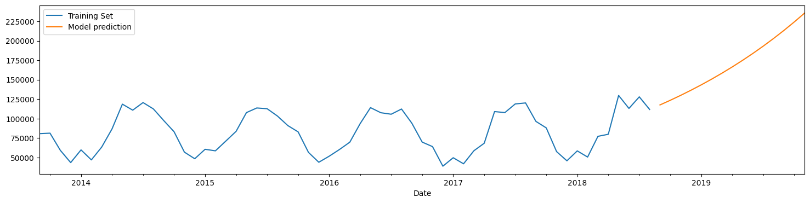
# Now we plot test (observed) values as well
train_set['Total'].plot(legend=True,label='Training Set')
test_set['Total'].plot(legend=True,label='Test Set',figsize=(16,10))
predictions.plot(legend=True,label='Model prediction');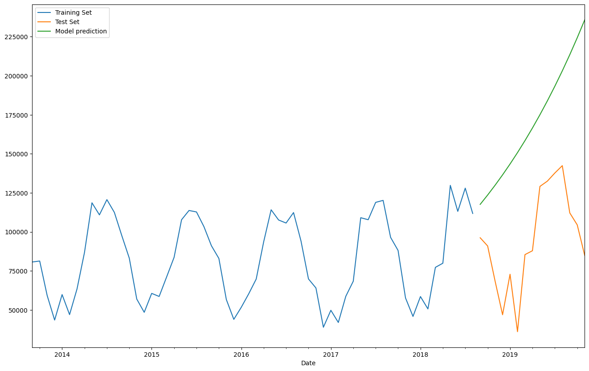
# Now we plot test (observed) values as well
# train_set['Total'].plot(legend=True,label='Training Set')
test_set['Total'].plot(legend=True,label='Test Set',figsize=(14,10))
predictions.plot(legend=True,label='Model prediction');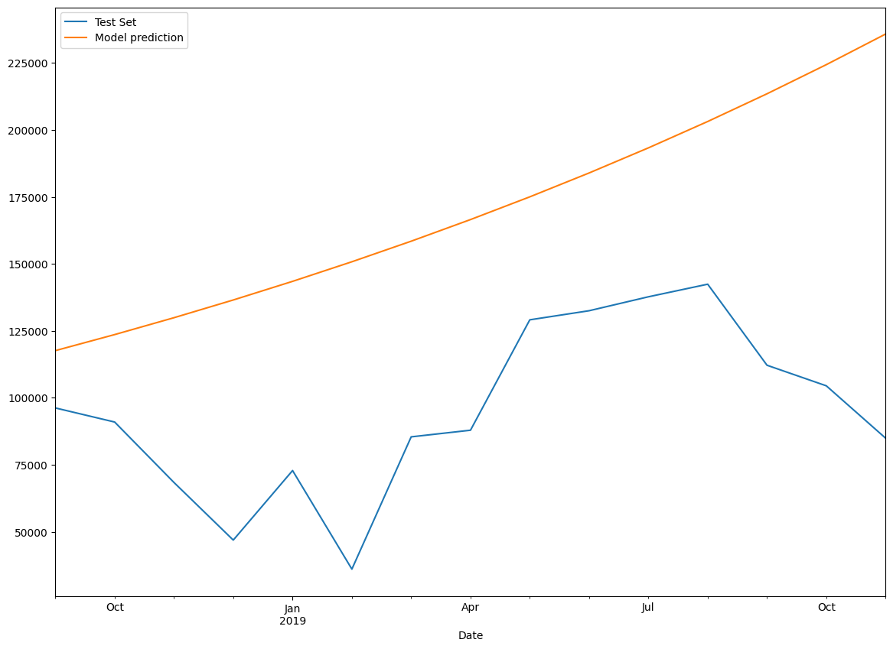
model.params{'smoothing_level': 0.995,
'smoothing_trend': 0.04738095238095238,
'smoothing_seasonal': nan,
'damping_trend': nan,
'initial_level': 51251.999999999985,
'initial_trend': 1.084850613368525,
'initial_seasons': array([], dtype=float64),
'use_boxcox': False,
'lamda': None,
'remove_bias': False}# Calculate Evaluation Metrics
y_test = test_set['Total']
y_pred = predictions
pd.DataFrame({'y_test': y_test, 'y_pred' : y_pred, 'diff':y_test - y_pred})| y_test | y_pred | diff | |
|---|---|---|---|
| 2018-09-30 | 96242.0 | 117626.951449 | -21384.951449 |
| 2018-10-31 | 90982.0 | 123616.042220 | -32634.042220 |
| 2018-11-30 | 68431.0 | 129910.073380 | -61479.073380 |
| 2018-12-31 | 46941.0 | 136524.571266 | -89583.571266 |
| 2019-01-31 | 72883.0 | 143475.852752 | -70592.852752 |
| 2019-02-28 | 36099.0 | 150781.065503 | -114682.065503 |
| 2019-03-31 | 85457.0 | 158458.230275 | -73001.230275 |
| 2019-04-30 | 87932.0 | 166526.285367 | -78594.285367 |
| 2019-05-31 | 129123.0 | 175005.133341 | -45882.133341 |
| 2019-06-30 | 132512.0 | 183915.690115 | -51403.690115 |
| 2019-07-31 | 137714.0 | 193279.936564 | -55565.936564 |
| 2019-08-31 | 142414.0 | 203120.972739 | -60706.972739 |
| 2019-09-30 | 112174.0 | 213463.074854 | -101289.074854 |
| 2019-10-31 | 104498.0 | 224331.755168 | -119833.755168 |
| 2019-11-30 | 84963.0 | 235753.824924 | -150790.824924 |
from sklearn.metrics import mean_absolute_error, mean_squared_error
print('MSE = ', mean_squared_error(y_test,y_pred))
print('RMSE = ', np.sqrt(mean_squared_error(y_test,y_pred)))
print('MAE = ', mean_absolute_error(y_test,y_pred))MSE = 6789777046.197141
RMSE = 82400.10343559734
MAE = 75161.63066121914# Train-test split
train_samples = int(new_df.shape[0] * 0.8)
train_set = new_df.iloc[:train_samples]
test_set = new_df.iloc[train_samples:]
print("Training set: ", train_set.shape[0])
print("Test set: ", test_set.shape[0])Training set: 60
Test set: 15# Let us use the triple exponential smoothing model
model = ExponentialSmoothing(train_set['Total'],trend='add', \
seasonal='add',seasonal_periods=12).fit()predictions = model.forecast(15)# let us plot the predictions and the training values
train_set['Total'].plot(legend=True,label='Training Set')
predictions.plot(legend=True,label='Model prediction');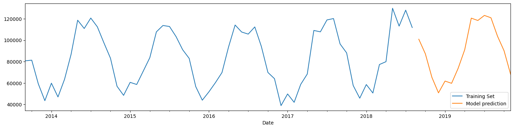
# Now we plot test (observed) values as well
train_set['Total'].plot(legend=True,label='Training Set')
test_set['Total'].plot(legend=True,label='Test Set',figsize=(16,10))
predictions.plot(legend=True,label='Model prediction');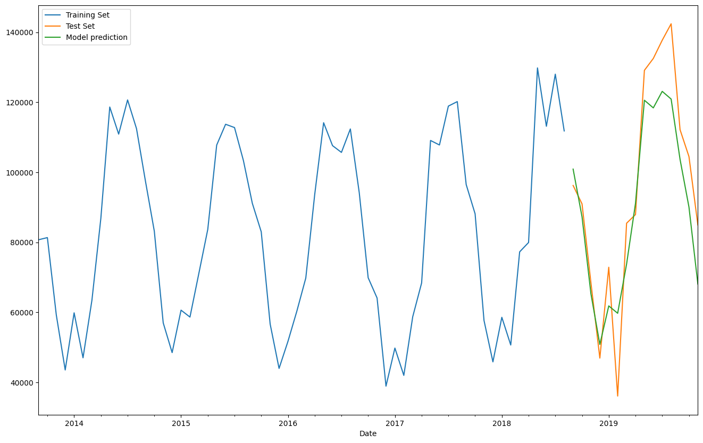
# Test vs observed - closeup of the predictions
# train_set['Total'].plot(legend=True,label='Training Set')
test_set['Total'].plot(legend=True,label='Test Set',figsize=(14,10))
predictions.plot(legend=True,label='Model prediction');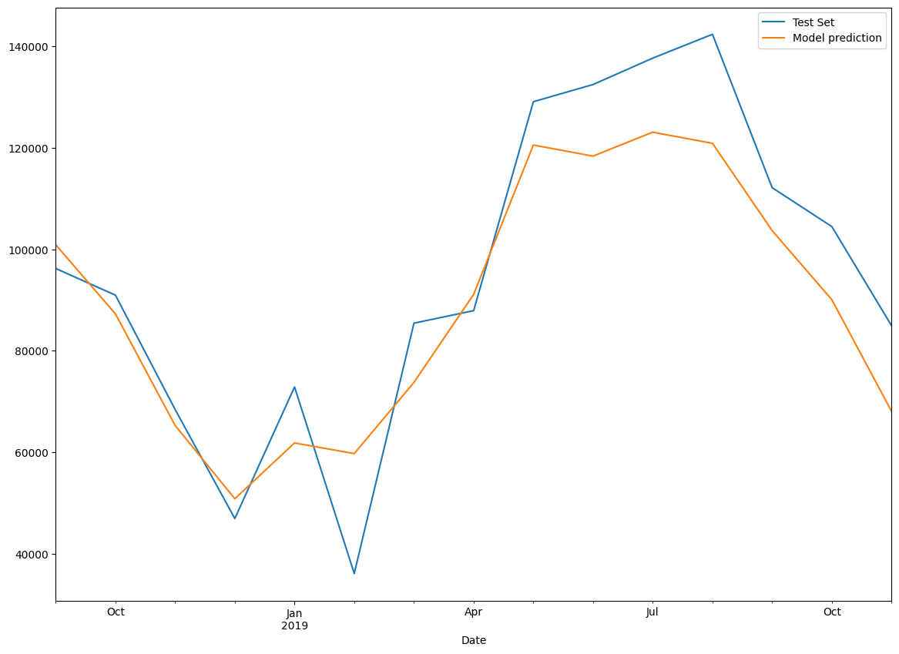
model.params{'smoothing_level': 0.2525,
'smoothing_trend': 0.0001,
'smoothing_seasonal': 0.0001,
'damping_trend': nan,
'initial_level': 82880.52777777775,
'initial_trend': 233.32297979798386,
'initial_seasons': array([ 12706.58333333, -1150.10416667, -23387.98958333, -38062.89583333,
-27297.51041667, -29627.21875 , -15820.59375 , 1298.15625 ,
30509.6875 , 28095.90625 , 32583.70833333, 30152.27083333]),
'use_boxcox': False,
'lamda': None,
'remove_bias': False}# Calculate Evaluation Metrics
y_test = test_set['Total']
y_pred = predictions
pd.DataFrame({'y_test': y_test, 'y_pred' : y_pred, 'diff':y_test - y_pred})| y_test | y_pred | diff | |
|---|---|---|---|
| 2018-09-30 | 96242.0 | 100914.043265 | -4672.043265 |
| 2018-10-31 | 90982.0 | 87291.600234 | 3690.399766 |
| 2018-11-30 | 68431.0 | 65286.060329 | 3144.939671 |
| 2018-12-31 | 46941.0 | 50843.440823 | -3902.440823 |
| 2019-01-31 | 72883.0 | 61841.794519 | 11041.205481 |
| 2019-02-28 | 36099.0 | 59743.301291 | -23644.301291 |
| 2019-03-31 | 85457.0 | 73783.743291 | 11673.256709 |
| 2019-04-30 | 87932.0 | 91133.340351 | -3201.340351 |
| 2019-05-31 | 129123.0 | 120579.559129 | 8543.440871 |
| 2019-06-30 | 132512.0 | 118396.387406 | 14115.612594 |
| 2019-07-31 | 137714.0 | 123117.725595 | 14596.274405 |
| 2019-08-31 | 142414.0 | 120917.981585 | 21496.018415 |
| 2019-09-30 | 112174.0 | 103703.284649 | 8470.715351 |
| 2019-10-31 | 104498.0 | 90080.841618 | 14417.158382 |
| 2019-11-30 | 84963.0 | 68075.301713 | 16887.698287 |
from sklearn.metrics import mean_absolute_error, mean_squared_error
print('MSE = ', mean_squared_error(y_test,y_pred))
print('RMSE = ', np.sqrt(mean_squared_error(y_test,y_pred)))
print('MAE = ', mean_absolute_error(y_test,y_pred))MSE = 160014279.71049073
RMSE = 12649.675083198412
MAE = 10899.78971069559model = ExponentialSmoothing(new_df['Total'], trend='mul').fit()# Fit values
pd.DataFrame({'fitted':model.fittedvalues.shift(-1), 'actual':new_df['Total']})| fitted | actual | |
|---|---|---|
| Date | ||
| 2013-09-30 | 88374.142596 | 80729.0 |
| 2013-10-31 | 89066.318586 | 81352.0 |
| 2013-11-30 | 64512.628727 | 59270.0 |
| 2013-12-31 | 47037.321040 | 43553.0 |
| 2014-01-31 | 64853.079989 | 59873.0 |
| ... | ... | ... |
| 2019-07-31 | 147204.031288 | 137714.0 |
| 2019-08-31 | 152114.454701 | 142414.0 |
| 2019-09-30 | 119265.035267 | 112174.0 |
| 2019-10-31 | 110660.795745 | 104498.0 |
| 2019-11-30 | NaN | 84963.0 |
75 rows × 2 columns
# Examine model parameters
model.params{'smoothing_level': 0.995,
'smoothing_trend': 0.02369047619047619,
'smoothing_seasonal': nan,
'damping_trend': nan,
'initial_level': 51251.999999999985,
'initial_trend': 1.084850613368525,
'initial_seasons': array([], dtype=float64),
'use_boxcox': False,
'lamda': None,
'remove_bias': False}# RMSE calculation
x = pd.DataFrame({'fitted':model.fittedvalues.shift(-1), 'actual':new_df['Total']}).dropna()
rmse = np.sqrt(mse(x.fitted, x.actual))
rmse6017.795365317929# predict the next 15 values
predictions = model.forecast(15)
predictions2019-12-31 89553.250900
2020-01-31 94248.964768
2020-02-29 99190.897823
2020-03-31 104391.960540
2020-04-30 109865.740351
2020-05-31 115626.537143
2020-06-30 121689.400618
2020-07-31 128070.169604
2020-08-31 134785.513440
2020-09-30 141852.975517
2020-10-31 149291.019112
2020-11-30 157119.075623
2020-12-31 165357.595328
2021-01-31 174028.100817
2021-02-28 183153.243211
Freq: M, dtype: float64model.fittedvaluesDate
2013-09-30 55600.763636
2013-10-31 88374.142596
2013-11-30 89066.318586
2013-12-31 64512.628727
2014-01-31 47037.321040
...
2019-07-31 141747.388757
2019-08-31 147204.031288
2019-09-30 152114.454701
2019-10-31 119265.035267
2019-11-30 110660.795745
Freq: M, Length: 75, dtype: float64ARIMA stands for Auto Regressive Integrated Moving Average. It is a general method for understanding and predicting time series data.
ARIMA models come in several different flavors, for example: - Non-seasonal ARIMA
- Seasonal ARIMA (Called SARIMA)
- SARIMA with external variables, called SARIMAX
Which one should we use? ARIMA or Holt-Winters?
> Try both. Whatever works better for your use case is the one to use.
ARIMA models have three non-negative integer parameters – p, d and q. - p represents the Auto-Regression component, AR. This is the part of the model that leverages the linear regression between an observation and past observations.
- d represents differencing, the I component. This is the number of times the series has to be differenced to make it stationary.
- q represents the MA component, the number of lagged forecast errors in the prediction. This considers the relationship between an observation and the residual error from a moving average model.
A correct choice of the ‘order’ of your ARIMA model, ie deciding the values of p, d and q, is essential to building a good ARIMA model.
Deciding the values of p, d and q
- Values of p and q can be determined manually by examining auto-correlation and partial-autocorrelation plots.
- The value of d can be determined by repeatedly differencing a series till we get to a stationary series.
The manual methods are time consuming, and less precise. An overview of these is provided in the Appendix to this slide deck.
In reality, we let the computer do a grid search (a brute force test of a set of permutations for p, d and q) to determine the order of our ARIMA model. The Pyramid ARIMA library in Python allows searching through multiple combinations of p, d and q to identify the best model.
ARIMA in Action
1. Split dataset into train and test.
2. Test set should be the last n entries. Can’t use random selection for train-test split.
3. Pyramid ARIMA is a Python package that can identify the values of p, d and q to use. Use Auto ARIMA from Pyramid ARIMA to find good values of p, d and q based on the training data set.
4. Fit a model on the training data set.
5. Predict the test set, and evaluate using MSE, MAE or RMSE.
Modern alternatives to ARIMA: ARIMA remains the gold standard for interpretable, statistically rigorous forecasting of a single series. For production at scale, consider: -
statsforecast.AutoARIMA— same logic, 10–100× faster via Cython - NeuralProphet — neural extension of Prophet handling multiple seasonalities and auto-regression jointly - TimeGPT (Nixtla) — zero-shot foundation model; call an API with your series and get forecasts back without any training
# Library imports
from pmdarima import auto_arima# Train-test split
train_samples = int(new_df.shape[0] * 0.8)
train_set = new_df.iloc[:train_samples]
test_set = new_df.iloc[train_samples:]
print("Training set: ", train_set.shape[0])
print("Test set: ", test_set.shape[0])Training set: 60
Test set: 15# Clean up
train_set.dropna(inplace=True)# Build a model using auto_arima
model = auto_arima(train_set['Total'],seasonal=False)order = model.get_params()['order']
seasonal_order = model.get_params()['seasonal_order']
print('Order = ', order)
print('Seasonal Order = ', seasonal_order)Order = (5, 0, 1)
Seasonal Order = (0, 0, 0, 0)# Create and fit model
from statsmodels.tsa.arima.model import ARIMA
model_ARIMA = ARIMA(train_set['Total'], order = order)
model_ARIMA = model_ARIMA.fit()# Predict with ARIMA
start=len(train_set)
end=len(train_set)+len(test_set)-1
ARIMApredictions = model_ARIMA.predict(start=start, end=end, dynamic=False, typ='levels').rename('ARIMA Predictions')
# model_ARIMA.summary()# Calculate Evaluation Metrics
y_test = test_set['Total']
y_pred = ARIMApredictions
pd.DataFrame({'y_test': y_test, 'y_pred' : y_pred, 'diff':y_test - y_pred})| y_test | y_pred | diff | |
|---|---|---|---|
| 2018-09-30 | 96242.0 | 97178.782841 | -936.782841 |
| 2018-10-31 | 90982.0 | 68163.166776 | 22818.833224 |
| 2018-11-30 | 68431.0 | 56095.942557 | 12335.057443 |
| 2018-12-31 | 46941.0 | 41005.329654 | 5935.670346 |
| 2019-01-31 | 72883.0 | 42591.251732 | 30291.748268 |
| 2019-02-28 | 36099.0 | 51555.855575 | -15456.855575 |
| 2019-03-31 | 85457.0 | 71734.836673 | 13722.163327 |
| 2019-04-30 | 87932.0 | 91198.670052 | -3266.670052 |
| 2019-05-31 | 129123.0 | 110818.433668 | 18304.566332 |
| 2019-06-30 | 132512.0 | 121161.132303 | 11350.867697 |
| 2019-07-31 | 137714.0 | 122198.078813 | 15515.921187 |
| 2019-08-31 | 142414.0 | 111847.671126 | 30566.328874 |
| 2019-09-30 | 112174.0 | 94763.626480 | 17410.373520 |
| 2019-10-31 | 104498.0 | 73934.456312 | 30563.543688 |
| 2019-11-30 | 84963.0 | 56060.536900 | 28902.463100 |
# Calculate evaluation metrics
from sklearn.metrics import mean_absolute_error, mean_squared_error
print('MSE = ', mean_squared_error(y_test,y_pred))
print('RMSE = ', np.sqrt(mean_squared_error(y_test,y_pred)))
print('MAE = ', mean_absolute_error(y_test,y_pred))MSE = 385065542.1818603
RMSE = 19623.086968717747
MAE = 17158.523031611756# Plot results
train_set['Total'].rename('Training Set').plot(legend=True)
test_set['Total'].rename('Test Set').plot(legend=True)
ARIMApredictions.plot(legend=True)
plt.show()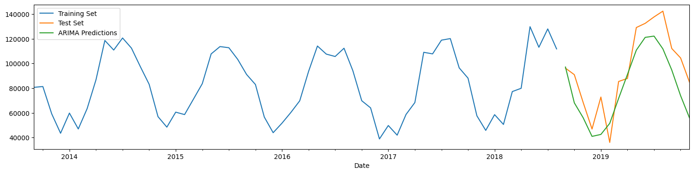
SARIMA, or Seasonal ARIMA, accounts for seasonality. In order to account for seasonality, we need three more parameters – P, D and Q – to take care of seasonal variations.
Auto ARIMA takes care of seasonality as well, and provides us the values for P, D and Q just like it does for p, d and q.
To use SARIMA, we now need 7 parameters for our function:
- p
- d
- q
- P
- D
- Q
- m (frequency of our seasons, eg, 12)
SARIMA in Action
1. Split dataset into train and test.
2. Test set should be the last n entries. Can’t use random selection for train-test split.
3. Pyramid ARIMA is a Python package that can identify the values of p, d, q, P, D and Q to use. Use Auto ARIMA from Pyramid ARIMA to find good values of p, d and q based on the training data set.
4. Fit a model on the training data set.
5. Predict the test set, and evaluate using MSE, MAE or RMSE.
# Create a model with auto_arima
model = auto_arima(train_set['Total'],seasonal=True,m=12)# Get values of p, d, q, P, D and Q
order = model.get_params()['order']
seasonal_order = model.get_params()['seasonal_order']
print('Order = ', order)
print('Seasonal Order = ', seasonal_order)Order = (1, 0, 0)
Seasonal Order = (0, 1, 1, 12)# Create and fit model
from statsmodels.tsa.statespace.sarimax import SARIMAX
model_SARIMA = SARIMAX(train_set['Total'], order=order, seasonal_order=seasonal_order)
model_SARIMA = model_SARIMA.fit()
model_SARIMA.paramsar.L1 2.438118e-01
ma.S.L12 -6.668071e-02
sigma2 7.885998e+07
dtype: float64# Create SARIMA predictions
start=len(train_set)
end=len(train_set)+len(test_set)-1
SARIMApredictions = model_SARIMA.predict(start=start, end=end, dynamic=False, typ='levels').rename('SARIMA Predictions')# Calculate Evaluation Metrics
y_test = test_set['Total']
y_pred = SARIMApredictions
pd.DataFrame({'y_test': y_test, 'y_pred' : y_pred, 'diff':y_test - y_pred})| y_test | y_pred | diff | |
|---|---|---|---|
| 2018-09-30 | 96242.0 | 94423.659176 | 1818.340824 |
| 2018-10-31 | 90982.0 | 86518.880961 | 4463.119039 |
| 2018-11-30 | 68431.0 | 57965.336973 | 10465.663027 |
| 2018-12-31 | 46941.0 | 45396.267772 | 1544.732228 |
| 2019-01-31 | 72883.0 | 58009.524643 | 14873.475357 |
| 2019-02-28 | 36099.0 | 50177.757219 | -14078.757219 |
| 2019-03-31 | 85457.0 | 76096.865509 | 9360.134491 |
| 2019-04-30 | 87932.0 | 79286.971453 | 8645.028547 |
| 2019-05-31 | 129123.0 | 128451.795674 | 671.204326 |
| 2019-06-30 | 132512.0 | 112789.442695 | 19722.557305 |
| 2019-07-31 | 137714.0 | 127353.588372 | 10360.411628 |
| 2019-08-31 | 142414.0 | 112330.356235 | 30083.643765 |
| 2019-09-30 | 112174.0 | 94550.771990 | 17623.228010 |
| 2019-10-31 | 104498.0 | 86549.872568 | 17948.127432 |
| 2019-11-30 | 84963.0 | 57972.893093 | 26990.106907 |
# Metrics
from sklearn.metrics import mean_absolute_error, mean_squared_error
print('MSE = ', mean_squared_error(y_test,y_pred))
print('RMSE = ', np.sqrt(mean_squared_error(y_test,y_pred)))
print('MAE = ', mean_absolute_error(y_test,y_pred))MSE = 231993016.88445473
RMSE = 15231.316978004716
MAE = 12576.56867360885# Plot results
train_set['Total'].rename('Training Set').plot(legend=True)
test_set['Total'].rename('Test Set').plot(legend=True)
SARIMApredictions.plot(legend = True)
ARIMApredictions.plot(legend=True)
plt.show()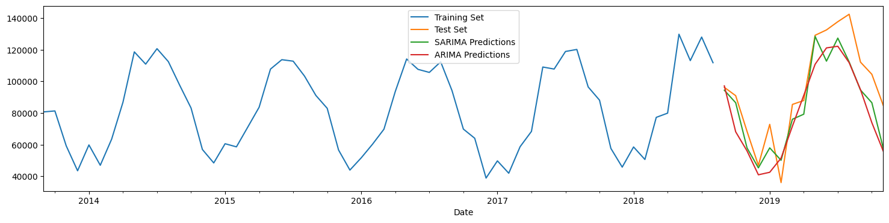
# Models compared to each other - calculate MAE, RMSE
from sklearn.metrics import mean_squared_error as mse
from sklearn.metrics import mean_absolute_error as mae
print('SARIMA:')
print(' RMSE = ' ,mse(SARIMApredictions, test_set['Total'], squared = False))
print(' MAE = ', mae(SARIMApredictions, test_set['Total']))
print('\nARIMA:')
print(' RMSE = ' ,mse(ARIMApredictions, test_set['Total'], squared = False))
print(' MAE = ', mae(ARIMApredictions, test_set['Total']))
print('\n')
print(' Mean of the data = ', new_df.Total.mean())
print(' St Dev of the data = ', new_df.Total.std())SARIMA:
RMSE = 15231.316978004716
MAE = 12576.56867360885
ARIMA:
RMSE = 19623.086968717747
MAE = 17158.523031611756
Mean of the data = 85078.8
St Dev of the data = 28012.270090473237SARIMAX = Seasonal ARIMA with eXogenous variable
SARIMAX is the same as SARIMA, but there is an additional predictor variable in addition to just the time series itself.
Let us load some data showing weekly power consumption as well as average daily temperature. We will try to predict kwh as a time series, and also use Temp_avg as an exogenous variable.
In order to predict the future, you need the past data series, plus observed values for the exogenous variable. That can sometimes be difficult because the future may not yet have revealed itself yet, and while you may be able to build a model that evaluates well, you will not be able to use it.
# Data adapted from:
# https://www.kaggle.com/srinuti/residential-power-usage-3years-data-timeseries
# The data shows weekly electricity usage and the average temperature of the week.
# Our hypothesis is that the power consumed can be predicted using the average
# temperature, and the pattern found in the time series.
df_elec = pd.read_csv('pwr_usage.csv')
df_elec| Date | Temp_avg | kwh | |
|---|---|---|---|
| 0 | 1/8/2017 | 75.542857 | 106.549 |
| 1 | 1/15/2017 | 71.014286 | 129.096 |
| 2 | 1/22/2017 | 64.414286 | 68.770 |
| 3 | 1/29/2017 | 56.728571 | 71.378 |
| 4 | 2/5/2017 | 66.128571 | 107.829 |
| ... | ... | ... | ... |
| 152 | 12/8/2019 | 74.371429 | 167.481 |
| 153 | 12/15/2019 | 61.242857 | 86.248 |
| 154 | 12/22/2019 | 50.000000 | 73.206 |
| 155 | 12/29/2019 | 60.128571 | 35.655 |
| 156 | 1/5/2020 | 7.185714 | 4.947 |
157 rows × 3 columns
df_elec.index = pd.DatetimeIndex(df_elec.Date, freq='W-SUN')
df_elec.drop(['Date'], axis = 1, inplace = True)
df_elec| Temp_avg | kwh | |
|---|---|---|
| Date | ||
| 2017-01-08 | 75.542857 | 106.549 |
| 2017-01-15 | 71.014286 | 129.096 |
| 2017-01-22 | 64.414286 | 68.770 |
| 2017-01-29 | 56.728571 | 71.378 |
| 2017-02-05 | 66.128571 | 107.829 |
| ... | ... | ... |
| 2019-12-08 | 74.371429 | 167.481 |
| 2019-12-15 | 61.242857 | 86.248 |
| 2019-12-22 | 50.000000 | 73.206 |
| 2019-12-29 | 60.128571 | 35.655 |
| 2020-01-05 | 7.185714 | 4.947 |
157 rows × 2 columns
df_elec.indexDatetimeIndex(['2017-01-08', '2017-01-15', '2017-01-22', '2017-01-29',
'2017-02-05', '2017-02-12', '2017-02-19', '2017-02-26',
'2017-03-05', '2017-03-12',
...
'2019-11-03', '2019-11-10', '2019-11-17', '2019-11-24',
'2019-12-01', '2019-12-08', '2019-12-15', '2019-12-22',
'2019-12-29', '2020-01-05'],
dtype='datetime64[ns]', name='Date', length=157, freq='W-SUN')df_elec['kwh'][:60].plot()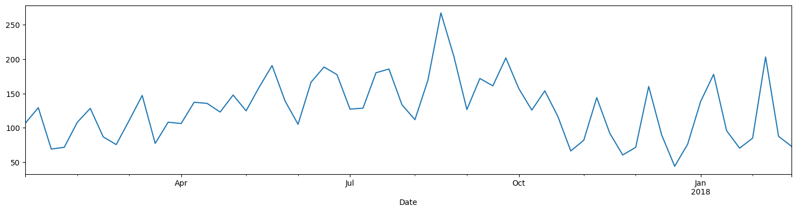
plt.rc("figure", figsize=(18,4))
from statsmodels.graphics.tsaplots import plot_acf,plot_pacf
plot_acf(df_elec['kwh']);
plot_pacf(df_elec['kwh']);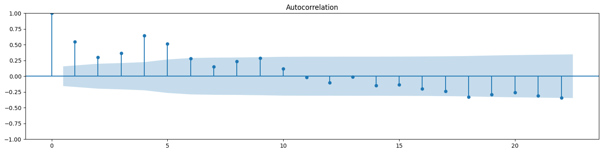
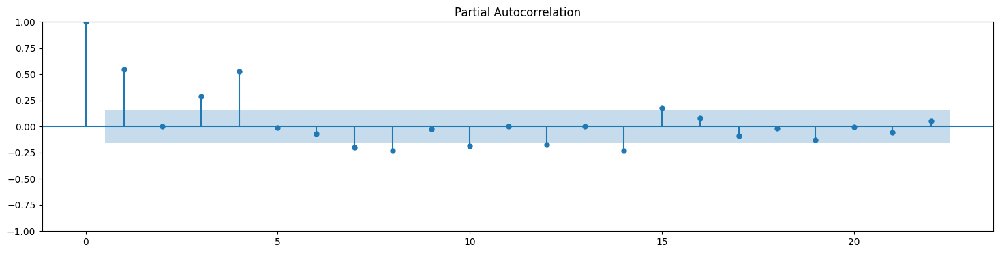
result = seasonal_decompose(df_elec['kwh'], model = 'additive')
plt.rcParams['figure.figsize'] = (20, 9)
result.plot();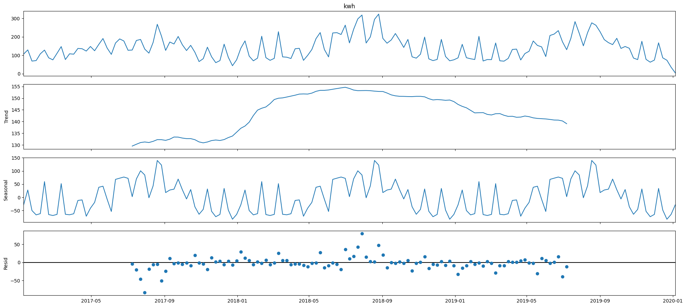
# Plot the months to see trends over months
month_plot(df_elec[['kwh']].resample(rule='ME').kwh.sum());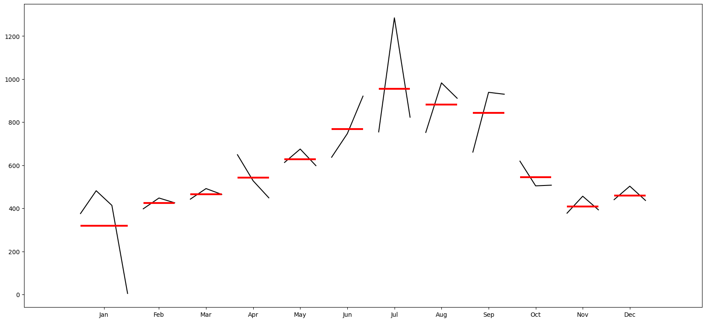
# Plot the quarter to see trends over quarters
quarter_plot(df_elec[['kwh']].resample(rule='Q').kwh.sum());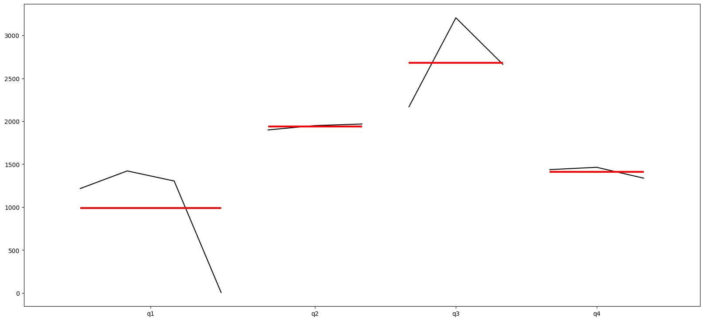
# Train-test split
test_samples = 12
train_set = df_elec.iloc[:-test_samples]
test_set = df_elec.iloc[-test_samples:]
print("Training set: ", train_set.shape[0])
print("Test set: ", test_set.shape[0])Training set: 145
Test set: 12train_set| Temp_avg | kwh | |
|---|---|---|
| Date | ||
| 2017-01-08 | 75.542857 | 106.5490 |
| 2017-01-15 | 71.014286 | 129.0960 |
| 2017-01-22 | 64.414286 | 68.7700 |
| 2017-01-29 | 56.728571 | 71.3780 |
| 2017-02-05 | 66.128571 | 107.8290 |
| ... | ... | ... |
| 2019-09-15 | 76.800000 | 168.3470 |
| 2019-09-22 | 79.385714 | 157.7260 |
| 2019-09-29 | 80.928571 | 191.8260 |
| 2019-10-06 | 70.771429 | 137.1698 |
| 2019-10-13 | 74.285714 | 147.5200 |
145 rows × 2 columns
test_set| Temp_avg | kwh | |
|---|---|---|
| Date | ||
| 2019-10-20 | 73.471429 | 137.847 |
| 2019-10-27 | 64.557143 | 84.999 |
| 2019-11-03 | 62.928571 | 76.744 |
| 2019-11-10 | 77.985714 | 175.708 |
| 2019-11-17 | 49.042857 | 77.927 |
| 2019-11-24 | 62.785714 | 62.805 |
| 2019-12-01 | 69.557143 | 74.079 |
| 2019-12-08 | 74.371429 | 167.481 |
| 2019-12-15 | 61.242857 | 86.248 |
| 2019-12-22 | 50.000000 | 73.206 |
| 2019-12-29 | 60.128571 | 35.655 |
| 2020-01-05 | 7.185714 | 4.947 |
Uncomment this cell to run auto-ARIMA (very time consuming)
Determine parameters for SARIMAX using Auto-ARIMA
model = auto_arima(train_set['kwh'],seasonal=True,m=52)
order = model.get_params()['order']
seasonal_order = model.get_params()['seasonal_order']
print('Order = ', order)
print('Seasonal Order = ', seasonal_order) # Set the order, ie the values of p, d, q and P, D, Q and m.
order = (1, 0, 1)
seasonal_order = (1, 0, 1, 52)# Create and fit model
from statsmodels.tsa.statespace.sarimax import SARIMAX
model_SARIMA = SARIMAX(train_set['kwh'],order=order,seasonal_order=seasonal_order)
model_SARIMA = model_SARIMA.fit()
# model_SARIMA.summary()
model_SARIMA.paramsar.L1 0.983883
ma.L1 -0.703757
ar.S.L52 0.994796
ma.S.L52 -0.842830
sigma2 781.564879
dtype: float64# Create SARIMA predictions
start=len(train_set)
end=len(train_set)+len(test_set)-1
SARIMApredictions = model_SARIMA.predict(start=start, end=end, dynamic=False, typ='levels').rename('SARIMA Predictions')# Calculate Evaluation Metrics
y_test = test_set['kwh']
y_pred = SARIMApredictions
pd.DataFrame({'y_test': y_test, 'y_pred' : y_pred, 'diff':y_test - y_pred})| y_test | y_pred | diff | |
|---|---|---|---|
| 2019-10-20 | 137.847 | 108.432110 | 29.414890 |
| 2019-10-27 | 84.999 | 84.006054 | 0.992946 |
| 2019-11-03 | 76.744 | 99.242296 | -22.498296 |
| 2019-11-10 | 175.708 | 164.413570 | 11.294430 |
| 2019-11-17 | 77.927 | 92.077521 | -14.150521 |
| 2019-11-24 | 62.805 | 74.425502 | -11.620502 |
| 2019-12-01 | 74.079 | 81.382111 | -7.303111 |
| 2019-12-08 | 167.481 | 164.427999 | 3.053001 |
| 2019-12-15 | 86.248 | 95.116618 | -8.868618 |
| 2019-12-22 | 73.206 | 65.763267 | 7.442733 |
| 2019-12-29 | 35.655 | 81.148805 | -45.493805 |
| 2020-01-05 | 4.947 | 113.466587 | -108.519587 |
# Model evaluation
from sklearn.metrics import mean_absolute_error, mean_squared_error
print('MSE = ', mean_squared_error(y_test,y_pred))
print('RMSE = ', np.sqrt(mean_squared_error(y_test,y_pred)))
print('MAE = ', mean_absolute_error(y_test,y_pred))MSE = 1323.1768701198491
RMSE = 36.375498211293944
MAE = 22.55437004082181# Plot results
train_set['kwh'].rename('Training Set').plot(legend=True)
test_set['kwh'].rename('Test Set').plot(legend=True)
SARIMApredictions.plot(legend = True)
plt.show()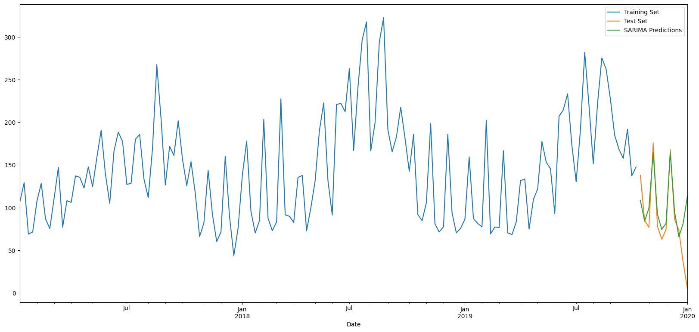
y_testDate
2019-10-20 137.847
2019-10-27 84.999
2019-11-03 76.744
2019-11-10 175.708
2019-11-17 77.927
2019-11-24 62.805
2019-12-01 74.079
2019-12-08 167.481
2019-12-15 86.248
2019-12-22 73.206
2019-12-29 35.655
2020-01-05 4.947
Freq: W-SUN, Name: kwh, dtype: float64model = SARIMAX(endog=train_set['kwh'],exog=train_set['Temp_avg'],order=(1,0,0),seasonal_order=(2,0,0,7),enforce_invertibility=False)
results = model.fit()
results.summary()| Dep. Variable: | kwh | No. Observations: | 145 |
|---|---|---|---|
| Model: | SARIMAX(1, 0, 0)x(2, 0, 0, 7) | Log Likelihood | -732.174 |
| Date: | Fri, 10 Nov 2023 | AIC | 1474.348 |
| Time: | 22:42:32 | BIC | 1489.232 |
| Sample: | 01-08-2017 | HQIC | 1480.396 |
| - 10-13-2019 | |||
| Covariance Type: | opg |
| coef | std err | z | P>|z| | [0.025 | 0.975] | |
|---|---|---|---|---|---|---|
| Temp_avg | 2.1916 | 0.096 | 22.781 | 0.000 | 2.003 | 2.380 |
| ar.L1 | 0.6524 | 0.064 | 10.202 | 0.000 | 0.527 | 0.778 |
| ar.S.L7 | -0.2007 | 0.089 | -2.261 | 0.024 | -0.375 | -0.027 |
| ar.S.L14 | -0.0945 | 0.090 | -1.048 | 0.294 | -0.271 | 0.082 |
| sigma2 | 1414.9974 | 193.794 | 7.302 | 0.000 | 1035.169 | 1794.826 |
| Ljung-Box (L1) (Q): | 0.20 | Jarque-Bera (JB): | 2.42 |
|---|---|---|---|
| Prob(Q): | 0.65 | Prob(JB): | 0.30 |
| Heteroskedasticity (H): | 1.42 | Skew: | 0.30 |
| Prob(H) (two-sided): | 0.23 | Kurtosis: | 2.80 |
# Create and fit model
from statsmodels.tsa.statespace.sarimax import SARIMAX
model_SARIMAX = SARIMAX(train_set['kwh'], exog = train_set['Temp_avg'], order=order,seasonal_order=seasonal_order)
model_SARIMAX = model_SARIMAX.fit()
# model_SARIMA.summary()
model_SARIMAX.paramsTemp_avg 4.494951
ar.L1 0.994501
ma.L1 -0.672744
ar.S.L52 0.996258
ma.S.L52 -0.936537
sigma2 680.303411
dtype: float64# Create SARIMAX predictions
exog = test_set[['Temp_avg']]
start=len(train_set)
end=len(train_set)+len(test_set)-1
SARIMAXpredictions = model_SARIMAX.predict(start=start, end=end, exog = exog, dynamic=False, typ='levels').rename('SARIMAX Predictions')# Calculate Evaluation Metrics
y_test = test_set['kwh']
y_pred = SARIMAXpredictions
pd.DataFrame({'y_test': y_test, 'y_pred' : y_pred, 'diff':y_test - y_pred})| y_test | y_pred | diff | |
|---|---|---|---|
| 2019-10-20 | 137.847 | 135.762630 | 2.084370 |
| 2019-10-27 | 84.999 | 90.884021 | -5.885021 |
| 2019-11-03 | 76.744 | 81.577953 | -4.833953 |
| 2019-11-10 | 175.708 | 172.860135 | 2.847865 |
| 2019-11-17 | 77.927 | 35.830430 | 42.096570 |
| 2019-11-24 | 62.805 | 89.152707 | -26.347707 |
| 2019-12-01 | 74.079 | 120.706976 | -46.627976 |
| 2019-12-08 | 167.481 | 150.329857 | 17.151143 |
| 2019-12-15 | 86.248 | 100.167290 | -13.919290 |
| 2019-12-22 | 73.206 | 22.178695 | 51.027305 |
| 2019-12-29 | 35.655 | 96.057753 | -60.402753 |
| 2020-01-05 | 4.947 | -156.713632 | 161.660632 |
# Metrics
from sklearn.metrics import mean_absolute_error, mean_squared_error
print('MSE = ', mean_squared_error(y_test,y_pred))
print('RMSE = ', np.sqrt(mean_squared_error(y_test,y_pred)))
print('MAE = ', mean_absolute_error(y_test,y_pred))MSE = 3132.1077834193397
RMSE = 55.96523727653926
MAE = 36.240382161713455# Plot results
train_set['kwh'].rename('Training Set').plot(legend=True)
test_set['kwh'].rename('Test Set').plot(legend=True)
SARIMAXpredictions.plot(legend = True)
plt.show()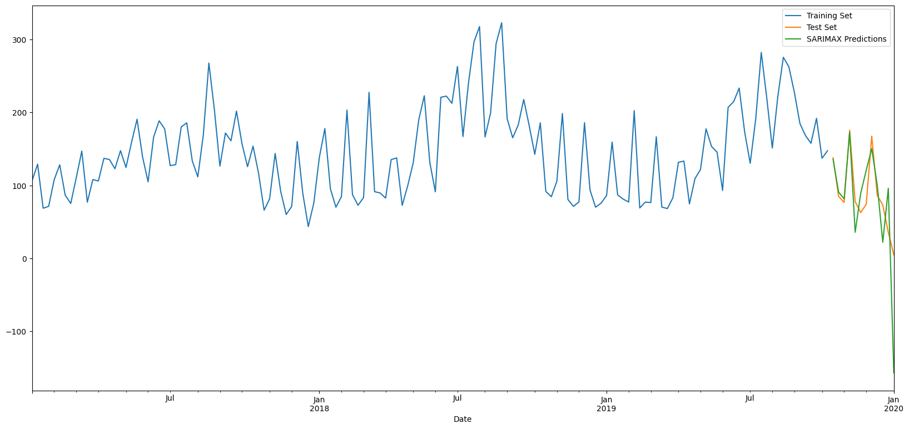
y_testDate
2019-10-20 137.847
2019-10-27 84.999
2019-11-03 76.744
2019-11-10 175.708
2019-11-17 77.927
2019-11-24 62.805
2019-12-01 74.079
2019-12-08 167.481
2019-12-15 86.248
2019-12-22 73.206
2019-12-29 35.655
2020-01-05 4.947
Freq: W-SUN, Name: kwh, dtype: float64https://facebook.github.io/prophet/
Prophet is a procedure for forecasting time series data based on an additive model where non-linear trends are fit with yearly, weekly, and daily seasonality, plus holiday effects.
It works best with time series that have strong seasonal effects and several seasons of historical data. Prophet is robust to missing data and shifts in the trend, and typically handles outliers well.
Prophet is superior to other methods as it can detect and account for multiple layers of seasonality in the same dataset. (What does this mean: Data may have hourly, weekly as well as monthly seasonality, all distinct from each other. Other methods will calculate seasonality at the granularity level of the data, ie, to get monthly seasonality you need to provide monthly data using resampling.)
NeuralProphet: An extension of Prophet that replaces the linear trend/seasonality components with neural networks. It handles auto-regression explicitly, supports lagged regressors, and typically achieves lower forecast error on complex series. API is nearly identical to Prophet:
pip install neuralprophet.
# Python
import pandas as pd
from prophet import Prophet# Train-test split
train_samples = int(new_df.shape[0] * 0.8)
train_set = new_df.iloc[:train_samples]
test_set = new_df.iloc[train_samples:]
print("Training set: ", train_set.shape[0])
print("Test set: ", test_set.shape[0])Training set: 60
Test set: 15train_set.head()| Total | Moving_Avg_6m | Moving_Avg_12m | EWMA12 | |
|---|---|---|---|---|
| Date | ||||
| 2013-09-30 | 80729.0 | 97184.000000 | 74734.583333 | 82750.448591 |
| 2013-10-31 | 81352.0 | 98743.000000 | 76039.333333 | 82535.302654 |
| 2013-11-30 | 59270.0 | 90525.666667 | 76757.916667 | 78956.025322 |
| 2013-12-31 | 43553.0 | 81237.833333 | 77356.583333 | 73509.406042 |
| 2014-01-31 | 59873.0 | 71554.333333 | 78605.666667 | 71411.497420 |
# Create the ds and y columns for Prophet
train_set_prophet = train_set.reset_index()
train_set_prophet = train_set_prophet[['Date', 'Total']]
train_set_prophet.columns = ['ds', 'y']
train_set_prophet.head()| ds | y | |
|---|---|---|
| 0 | 2013-09-30 | 80729.0 |
| 1 | 2013-10-31 | 81352.0 |
| 2 | 2013-11-30 | 59270.0 |
| 3 | 2013-12-31 | 43553.0 |
| 4 | 2014-01-31 | 59873.0 |
model = Prophet()
model.fit(train_set_prophet)22:42:37 - cmdstanpy - INFO - Chain [1] start processing
22:42:37 - cmdstanpy - INFO - Chain [1] done processing<prophet.forecaster.Prophet at 0x14408a54c10>future = model.make_future_dataframe(periods=15,freq = 'm')
future.tail()| ds | |
|---|---|
| 70 | 2019-07-31 |
| 71 | 2019-08-31 |
| 72 | 2019-09-30 |
| 73 | 2019-10-31 |
| 74 | 2019-11-30 |
future.shape(75, 1)# Python
forecast = model.predict(future)forecast.columnsIndex(['ds', 'trend', 'yhat_lower', 'yhat_upper', 'trend_lower', 'trend_upper',
'additive_terms', 'additive_terms_lower', 'additive_terms_upper',
'yearly', 'yearly_lower', 'yearly_upper', 'multiplicative_terms',
'multiplicative_terms_lower', 'multiplicative_terms_upper', 'yhat'],
dtype='object')forecast.head()| ds | trend | yhat_lower | yhat_upper | trend_lower | trend_upper | additive_terms | additive_terms_lower | additive_terms_upper | yearly | yearly_lower | yearly_upper | multiplicative_terms | multiplicative_terms_lower | multiplicative_terms_upper | yhat | |
|---|---|---|---|---|---|---|---|---|---|---|---|---|---|---|---|---|
| 0 | 2013-09-30 | 83323.589562 | 85819.953093 | 99008.026474 | 83323.589562 | 83323.589562 | 9120.391098 | 9120.391098 | 9120.391098 | 9120.391098 | 9120.391098 | 9120.391098 | 0.0 | 0.0 | 0.0 | 92443.980660 |
| 1 | 2013-10-31 | 83286.808660 | 73361.637478 | 86911.006692 | 83286.808660 | 83286.808660 | -2989.685567 | -2989.685567 | -2989.685567 | -2989.685567 | -2989.685567 | -2989.685567 | 0.0 | 0.0 | 0.0 | 80297.123093 |
| 2 | 2013-11-30 | 83251.214239 | 53784.220687 | 66821.426791 | 83251.214239 | 83251.214239 | -23011.327489 | -23011.327489 | -23011.327489 | -23011.327489 | -23011.327489 | -23011.327489 | 0.0 | 0.0 | 0.0 | 60239.886750 |
| 3 | 2013-12-31 | 83214.433337 | 36997.798701 | 50727.126628 | 83214.433337 | 83214.433337 | -39468.043632 | -39468.043632 | -39468.043632 | -39468.043632 | -39468.043632 | -39468.043632 | 0.0 | 0.0 | 0.0 | 43746.389705 |
| 4 | 2014-01-31 | 83177.652434 | 49717.718616 | 62756.802402 | 83177.652434 | 83177.652434 | -26943.934360 | -26943.934360 | -26943.934360 | -26943.934360 | -26943.934360 | -26943.934360 | 0.0 | 0.0 | 0.0 | 56233.718075 |
preds = pd.DataFrame({'Prediction': forecast.yhat[-15:]})
preds.index = pd.to_datetime(forecast.ds[-15:])
preds.index.names = ['Date']
preds| Prediction | |
|---|---|
| Date | |
| 2018-09-30 | 96887.285693 |
| 2018-10-31 | 88140.126499 |
| 2018-11-30 | 62980.805485 |
| 2018-12-31 | 50953.542730 |
| 2019-01-31 | 62367.352742 |
| 2019-02-28 | 56888.480539 |
| 2019-03-31 | 76208.358529 |
| 2019-04-30 | 86669.010005 |
| 2019-05-31 | 122794.851343 |
| 2019-06-30 | 120372.674873 |
| 2019-07-31 | 128458.704108 |
| 2019-08-31 | 114207.558640 |
| 2019-09-30 | 101186.010180 |
| 2019-10-31 | 95354.181624 |
| 2019-11-30 | 64717.364105 |
# Calculate Evaluation Metrics
y_test = test_set['Total']
y_pred = preds['Prediction']
pd.DataFrame({'y_test': y_test, 'y_pred' : y_pred, 'diff':y_test - y_pred})| y_test | y_pred | diff | |
|---|---|---|---|
| Date | |||
| 2018-09-30 | 96242.0 | 96887.285693 | -645.285693 |
| 2018-10-31 | 90982.0 | 88140.126499 | 2841.873501 |
| 2018-11-30 | 68431.0 | 62980.805485 | 5450.194515 |
| 2018-12-31 | 46941.0 | 50953.542730 | -4012.542730 |
| 2019-01-31 | 72883.0 | 62367.352742 | 10515.647258 |
| 2019-02-28 | 36099.0 | 56888.480539 | -20789.480539 |
| 2019-03-31 | 85457.0 | 76208.358529 | 9248.641471 |
| 2019-04-30 | 87932.0 | 86669.010005 | 1262.989995 |
| 2019-05-31 | 129123.0 | 122794.851343 | 6328.148657 |
| 2019-06-30 | 132512.0 | 120372.674873 | 12139.325127 |
| 2019-07-31 | 137714.0 | 128458.704108 | 9255.295892 |
| 2019-08-31 | 142414.0 | 114207.558640 | 28206.441360 |
| 2019-09-30 | 112174.0 | 101186.010180 | 10987.989820 |
| 2019-10-31 | 104498.0 | 95354.181624 | 9143.818376 |
| 2019-11-30 | 84963.0 | 64717.364105 | 20245.635895 |
# Model evaluation
from sklearn.metrics import mean_absolute_error, mean_squared_error
print('MSE = ', mean_squared_error(y_test,y_pred))
print('RMSE = ', np.sqrt(mean_squared_error(y_test,y_pred)))
print('MAE = ', mean_absolute_error(y_test,y_pred))MSE = 157807682.19504696
RMSE = 12562.15276913344
MAE = 10071.55405527476# Plot results
train_set['Total'].rename('Training Set').plot(legend=True)
test_set['Total'].rename('Test Set').plot(legend=True)
preds.Prediction.plot(legend = True)
plt.show()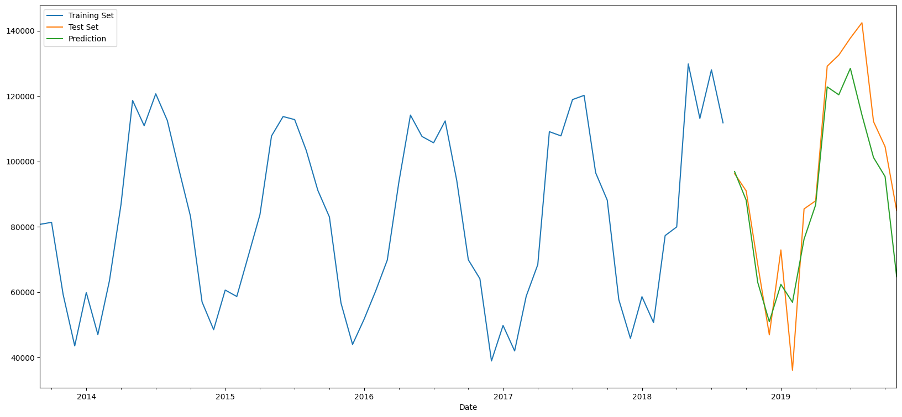
model.plot_components(forecast);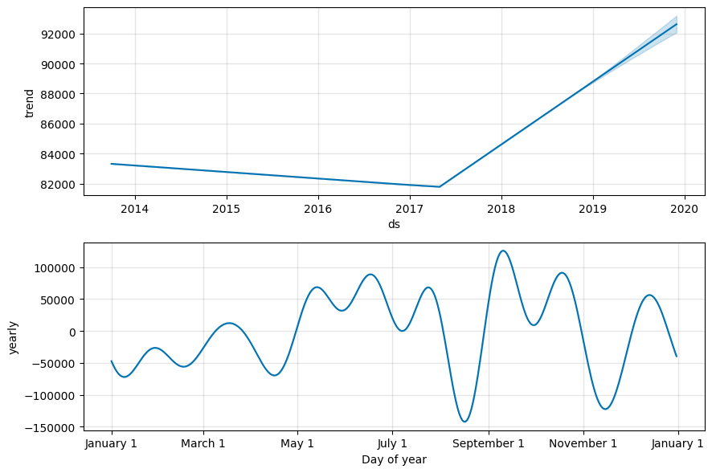
df = pd.read_csv('https://data.seattle.gov/api/views/65db-xm6k/rows.csv')df| Date | Fremont Bridge Sidewalks, south of N 34th St | Fremont Bridge Sidewalks, south of N 34th St Cyclist East Sidewalk | Fremont Bridge Sidewalks, south of N 34th St Cyclist West Sidewalk | |
|---|---|---|---|---|
| 0 | 08/01/2022 12:00:00 AM | 23.0 | 7.0 | 16.0 |
| 1 | 08/01/2022 01:00:00 AM | 12.0 | 5.0 | 7.0 |
| 2 | 08/01/2022 02:00:00 AM | 3.0 | 0.0 | 3.0 |
| 3 | 08/01/2022 03:00:00 AM | 5.0 | 2.0 | 3.0 |
| 4 | 08/01/2022 04:00:00 AM | 10.0 | 2.0 | 8.0 |
| ... | ... | ... | ... | ... |
| 95635 | 08/31/2023 07:00:00 PM | 224.0 | 72.0 | 152.0 |
| 95636 | 08/31/2023 08:00:00 PM | 142.0 | 59.0 | 83.0 |
| 95637 | 08/31/2023 09:00:00 PM | 67.0 | 35.0 | 32.0 |
| 95638 | 08/31/2023 10:00:00 PM | 43.0 | 18.0 | 25.0 |
| 95639 | 08/31/2023 11:00:00 PM | 12.0 | 8.0 | 4.0 |
95640 rows × 4 columns
# Rename the columns to make them simpler to use
df.columns = ['Date', 'Total', 'East', 'West']# Create the Date column
df['Date'] = pd.DatetimeIndex(df.Date)df.head()| Date | Total | East | West | |
|---|---|---|---|---|
| 0 | 2022-08-01 00:00:00 | 23.0 | 7.0 | 16.0 |
| 1 | 2022-08-01 01:00:00 | 12.0 | 5.0 | 7.0 |
| 2 | 2022-08-01 02:00:00 | 3.0 | 0.0 | 3.0 |
| 3 | 2022-08-01 03:00:00 | 5.0 | 2.0 | 3.0 |
| 4 | 2022-08-01 04:00:00 | 10.0 | 2.0 | 8.0 |
# Create the ds and y columns for Prophet
df2 = df[['Date', 'Total']]
df2.columns = ['ds', 'y']
df2| ds | y | |
|---|---|---|
| 0 | 2022-08-01 00:00:00 | 23.0 |
| 1 | 2022-08-01 01:00:00 | 12.0 |
| 2 | 2022-08-01 02:00:00 | 3.0 |
| 3 | 2022-08-01 03:00:00 | 5.0 |
| 4 | 2022-08-01 04:00:00 | 10.0 |
| ... | ... | ... |
| 95635 | 2023-08-31 19:00:00 | 224.0 |
| 95636 | 2023-08-31 20:00:00 | 142.0 |
| 95637 | 2023-08-31 21:00:00 | 67.0 |
| 95638 | 2023-08-31 22:00:00 | 43.0 |
| 95639 | 2023-08-31 23:00:00 | 12.0 |
95640 rows × 2 columns
# Remove post-Covid data
df_precovid = df2[df2.ds < pd.to_datetime('2019-12-31')]%%time
model = Prophet()
model.fit(df_precovid)22:42:53 - cmdstanpy - INFO - Chain [1] start processing
22:43:07 - cmdstanpy - INFO - Chain [1] done processingCPU times: total: 1.7 s
Wall time: 19.3 s<prophet.forecaster.Prophet at 0x144193be390>future = model.make_future_dataframe(periods=365)
future.tail()| ds | |
|---|---|
| 63829 | 2020-12-25 23:00:00 |
| 63830 | 2020-12-26 23:00:00 |
| 63831 | 2020-12-27 23:00:00 |
| 63832 | 2020-12-28 23:00:00 |
| 63833 | 2020-12-29 23:00:00 |
type(future)pandas.core.frame.DataFramefuture.shape(63834, 1)%%time
forecast = model.predict(future)CPU times: total: 2.3 s
Wall time: 8.74 stype(forecast)pandas.core.frame.DataFrameforecast.shape(63834, 22)forecast.columnsIndex(['ds', 'trend', 'yhat_lower', 'yhat_upper', 'trend_lower', 'trend_upper',
'additive_terms', 'additive_terms_lower', 'additive_terms_upper',
'daily', 'daily_lower', 'daily_upper', 'weekly', 'weekly_lower',
'weekly_upper', 'yearly', 'yearly_lower', 'yearly_upper',
'multiplicative_terms', 'multiplicative_terms_lower',
'multiplicative_terms_upper', 'yhat'],
dtype='object')# forecast.to_excel('forecast.xlsx')forecast[['ds', 'yhat', 'yhat_lower', 'yhat_upper']].tail()| ds | yhat | yhat_lower | yhat_upper | |
|---|---|---|---|---|
| 63829 | 2020-12-25 23:00:00 | -16.020172 | -142.659821 | 105.518723 |
| 63830 | 2020-12-26 23:00:00 | -67.037196 | -191.451418 | 42.315426 |
| 63831 | 2020-12-27 23:00:00 | -22.832529 | -145.837458 | 87.747590 |
| 63832 | 2020-12-28 23:00:00 | 27.544487 | -85.548906 | 145.626637 |
| 63833 | 2020-12-29 23:00:00 | 26.487504 | -87.689924 | 157.621258 |
# Python
fig1 = model.plot(forecast, include_legend=True)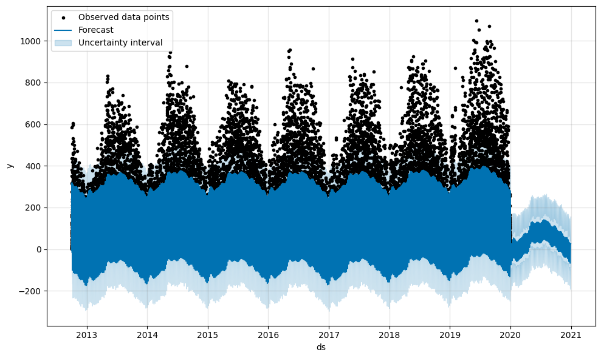
# Python
fig2 = model.plot_components(forecast)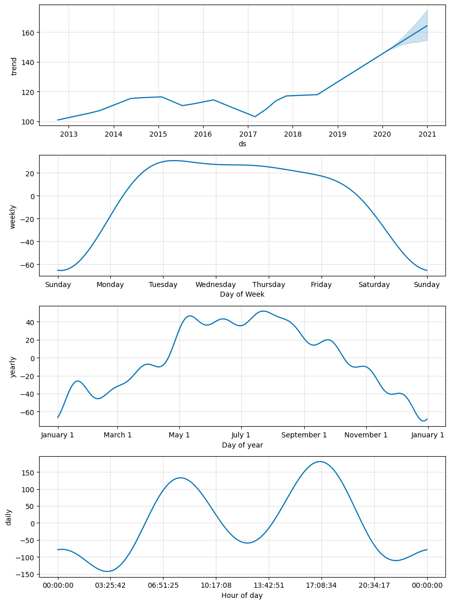
Prediction with a deep neural network:
1. Split the data into train and test.
2. Decide how many time periods to use for prediction, and divide the data into \(X\) and \(y\) using Timeseries.Generator from Tensorflow.
3. Create a model and predict the first observation.
4. Then predict subsequent observations after including the earlier prediction.
5. Repeat to get as many prediction as you need (typically equal to the test set size). Evaluate the model.
# We use the same train and test sets that were created in the previous example
# Let us look at the dates in the train_set.
train_set.indexDatetimeIndex(['2013-09-30', '2013-10-31', '2013-11-30', '2013-12-31',
'2014-01-31', '2014-02-28', '2014-03-31', '2014-04-30',
'2014-05-31', '2014-06-30', '2014-07-31', '2014-08-31',
'2014-09-30', '2014-10-31', '2014-11-30', '2014-12-31',
'2015-01-31', '2015-02-28', '2015-03-31', '2015-04-30',
'2015-05-31', '2015-06-30', '2015-07-31', '2015-08-31',
'2015-09-30', '2015-10-31', '2015-11-30', '2015-12-31',
'2016-01-31', '2016-02-29', '2016-03-31', '2016-04-30',
'2016-05-31', '2016-06-30', '2016-07-31', '2016-08-31',
'2016-09-30', '2016-10-31', '2016-11-30', '2016-12-31',
'2017-01-31', '2017-02-28', '2017-03-31', '2017-04-30',
'2017-05-31', '2017-06-30', '2017-07-31', '2017-08-31',
'2017-09-30', '2017-10-31', '2017-11-30', '2017-12-31',
'2018-01-31', '2018-02-28', '2018-03-31', '2018-04-30',
'2018-05-31', '2018-06-30', '2018-07-31', '2018-08-31'],
dtype='datetime64[ns]', name='Date', freq='M')train_set = train_set[['Total']]
test_set = test_set[['Total']]# We will do standard scaling as we are using a neural net
from sklearn.preprocessing import StandardScaler
std_scaler = StandardScaler()# IGNORE WARNING ITS JUST CONVERTING TO FLOATS
# WE ONLY FIT TO TRAININ DATA, OTHERWISE WE ARE CHEATING ASSUMING INFO ABOUT TEST SET
std_scaler.fit(train_set)StandardScaler()In a Jupyter environment, please rerun this cell to show the HTML representation or trust the notebook.
StandardScaler()
# Now we transform using the standard scaler instantiated above
std_train = std_scaler.transform(train_set)
std_test = std_scaler.transform(test_set)std_train.shape(60, 1)std_test.shape(15, 1)from tensorflow.keras.preprocessing.sequence import TimeseriesGenerator
# define generator
lag = 12
batch_size = 1
sequences = TimeseriesGenerator(std_train, std_train, length=lag, batch_size=batch_size)# Let us see what our standard scaled training data looks like.
std_trainarray([[-0.06864305],
[-0.0450607 ],
[-0.88092804],
[-1.47586179],
[-0.85810276],
[-1.34443658],
[-0.72103747],
[ 0.16324371],
[ 1.36654898],
[ 1.07368123],
[ 1.44320106],
[ 1.13360234],
[ 0.56838311],
[ 0.02428578],
[-0.96723261],
[-1.28833861],
[-0.82944812],
[-0.90405615],
[-0.43146292],
[ 0.04370431],
[ 0.955126 ],
[ 1.18004783],
[ 1.14457968],
[ 0.78766485],
[ 0.32544331],
[ 0.01743441],
[-0.97942124],
[-1.45924438],
[-1.16622522],
[-0.83887349],
[-0.48218578],
[ 0.42003766],
[ 1.1967788 ],
[ 0.94914525],
[ 0.87593777],
[ 1.12943852],
[ 0.43964545],
[-0.47919541],
[-0.69821218],
[-1.6505907 ],
[-1.23920557],
[-1.53460946],
[-0.9007251 ],
[-0.53483914],
[ 1.00486469],
[ 0.95611018],
[ 1.37639073],
[ 1.42499383],
[ 0.52825905],
[ 0.21199822],
[-0.94096271],
[-1.38845949],
[-0.90663015],
[-1.20619786],
[-0.19904623],
[-0.098244 ],
[ 1.78932782],
[ 1.15839598],
[ 1.72138189],
[ 1.10782453]])len(std_train)60len(sequences) # n_input = 248# What does the first batch look like?
X,y = sequences[0]Xarray([[[-0.06864305],
[-0.0450607 ],
[-0.88092804],
[-1.47586179],
[-0.85810276],
[-1.34443658],
[-0.72103747],
[ 0.16324371],
[ 1.36654898],
[ 1.07368123],
[ 1.44320106],
[ 1.13360234]]])yarray([[0.56838311]])# What does the second batch look like?
X,y = sequences[1]Xarray([[[-0.0450607 ],
[-0.88092804],
[-1.47586179],
[-0.85810276],
[-1.34443658],
[-0.72103747],
[ 0.16324371],
[ 1.36654898],
[ 1.07368123],
[ 1.44320106],
[ 1.13360234],
[ 0.56838311]]])yarray([[0.02428578]])# First, some library imports
from keras.models import Sequential
from keras.layers import Dense
from keras.layers import LSTM
import tensorflow as tf# We will go with a very simple architecture, a sequential model
# with just one hidden LSTM layer. Define model:
model = Sequential()
model.add(LSTM(100, input_shape=(lag, batch_size)))
model.add(Dense(1))
model.compile(optimizer='adam', loss='mse')model.summary()Model: "sequential"
_________________________________________________________________
Layer (type) Output Shape Param #
=================================================================
lstm (LSTM) (None, 100) 40800
dense (Dense) (None, 1) 101
=================================================================
Total params: 40901 (159.77 KB)
Trainable params: 40901 (159.77 KB)
Non-trainable params: 0 (0.00 Byte)
_________________________________________________________________# fit model
callback = tf.keras.callbacks.EarlyStopping(monitor='loss', patience=4)
history = model.fit_generator(sequences,epochs=50, callbacks=[callback])Epoch 1/50
48/48 [==============================] - 2s 7ms/step - loss: 0.5581
Epoch 2/50
48/48 [==============================] - 0s 7ms/step - loss: 0.2086
Epoch 3/50
48/48 [==============================] - 0s 5ms/step - loss: 0.2686
Epoch 4/50
48/48 [==============================] - 0s 5ms/step - loss: 0.1574
Epoch 5/50
48/48 [==============================] - 0s 4ms/step - loss: 0.1408
Epoch 6/50
48/48 [==============================] - 0s 6ms/step - loss: 0.1744
Epoch 7/50
48/48 [==============================] - 0s 6ms/step - loss: 0.1421
Epoch 8/50
48/48 [==============================] - 0s 6ms/step - loss: 0.1696
Epoch 9/50
48/48 [==============================] - 0s 6ms/step - loss: 0.1318
Epoch 10/50
48/48 [==============================] - 0s 4ms/step - loss: 0.1321
Epoch 11/50
48/48 [==============================] - 0s 6ms/step - loss: 0.1318
Epoch 12/50
48/48 [==============================] - 0s 6ms/step - loss: 0.1423
Epoch 13/50
48/48 [==============================] - 0s 5ms/step - loss: 0.1208
Epoch 14/50
48/48 [==============================] - 0s 6ms/step - loss: 0.1472
Epoch 15/50
48/48 [==============================] - 0s 4ms/step - loss: 0.1156
Epoch 16/50
48/48 [==============================] - 0s 5ms/step - loss: 0.1262
Epoch 17/50
48/48 [==============================] - 0s 5ms/step - loss: 0.1403
Epoch 18/50
48/48 [==============================] - 0s 6ms/step - loss: 0.1193
Epoch 19/50
48/48 [==============================] - 0s 7ms/step - loss: 0.1363loss_per_epoch = model.history.history['loss']
plt.plot(range(len(loss_per_epoch)),loss_per_epoch)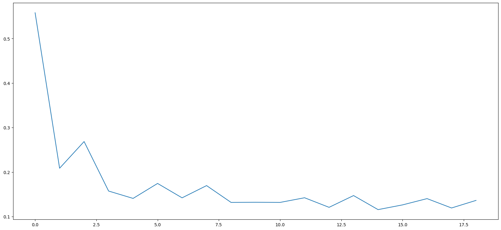
As part of our training, we used the preceding 12 values to predict the next one. Now we will use the last 12 values of the training data to predict the first value of the test data. Then we will add this predicted value to our sequence, and predict the next one, and so on.
lag12# Pick the last 12 values in the training data
predictors = std_train[-lag:]# See what they look like...
predictorsarray([[ 0.52825905],
[ 0.21199822],
[-0.94096271],
[-1.38845949],
[-0.90663015],
[-1.20619786],
[-0.19904623],
[-0.098244 ],
[ 1.78932782],
[ 1.15839598],
[ 1.72138189],
[ 1.10782453]])We will need to reshape this data to feed into our LSTM layer which expects a 3 dimensional input. We do that next.
predictors = predictors.reshape((1, lag, 1))Next, we perform the prediction to get the first item after the training data has ended. This prediction will come in as standard-scaled, so we will need to reverse out the scaling to get the true prediction.
# Predict
x = model.predict(predictors)
x1/1 [==============================] - 0s 414ms/steparray([[0.45122966]], dtype=float32)# Do an inverse transform to get the actual prediction
std_scaler.inverse_transform(x)array([[94463.03]], dtype=float32)# Let us see what the actual value in the test set was.
test_set.iloc[1]Total 90982.0
Name: 2018-10-31 00:00:00, dtype: float64Now we can predict the next data point. However, doing this manually is going to be very tedious, so we write some code to loop through this and do it for as many times as we need the predictions for.
predictors = std_train[-lag:].reshape((1, lag, 1))
predictions = []
for i in range(len(std_test)):
next_pred = model.predict(predictors)[0]
predictions.append(next_pred)
predictors = np.append(predictors[:,1:,:],[[next_pred]],axis=1)
predictions1/1 [==============================] - 0s 22ms/step
1/1 [==============================] - 0s 27ms/step
1/1 [==============================] - 0s 30ms/step
1/1 [==============================] - 0s 26ms/step
1/1 [==============================] - 0s 35ms/step
1/1 [==============================] - 0s 27ms/step
1/1 [==============================] - 0s 32ms/step
1/1 [==============================] - 0s 29ms/step
1/1 [==============================] - 0s 30ms/step
1/1 [==============================] - 0s 28ms/step
1/1 [==============================] - 0s 33ms/step
1/1 [==============================] - 0s 21ms/step
1/1 [==============================] - 0s 30ms/step
1/1 [==============================] - 0s 31ms/step
1/1 [==============================] - 0s 25ms/step[array([0.45122966], dtype=float32),
array([-0.3290154], dtype=float32),
array([-1.0449202], dtype=float32),
array([-1.4312159], dtype=float32),
array([-1.4465744], dtype=float32),
array([-1.1398427], dtype=float32),
array([-0.48234788], dtype=float32),
array([0.2781088], dtype=float32),
array([1.047395], dtype=float32),
array([1.4374696], dtype=float32),
array([1.5440987], dtype=float32),
array([1.1877004], dtype=float32),
array([0.53592247], dtype=float32),
array([-0.24500774], dtype=float32),
array([-0.94227564], dtype=float32)]# We inverse transform these scaled predictions
final_predictions = std_scaler.inverse_transform(predictions)
final_predictionsarray([[ 94463.03240163],
[ 73850.4654616 ],
[ 54937.64395903],
[ 44732.45864597],
[ 44326.71497745],
[ 52429.97380651],
[ 69799.71784522],
[ 89889.51390621],
[110212.56840795],
[120517.58586778],
[123334.52152427],
[113919.16595602],
[ 96700.45268135],
[ 76069.78565349],
[ 57649.31496236]])# Now let us plot the actuals versus the predicted values
pd.DataFrame({'actual': test_set.Total, 'forecast': final_predictions.flatten()}).plot()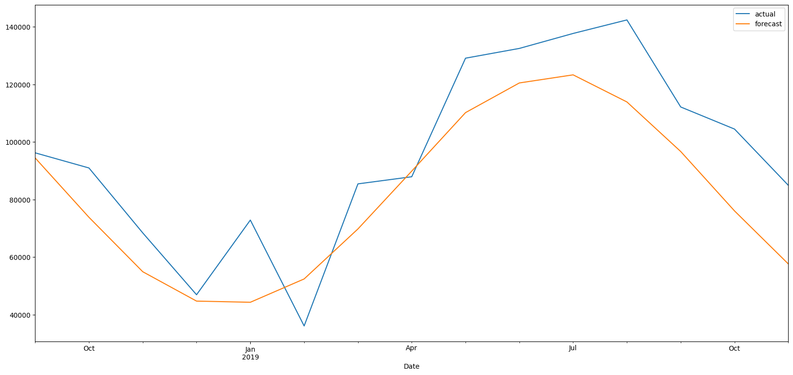
# Next, we evaluate our model using some metrics
y_test = test_set.Total
y_pred = final_predictions.flatten()
from sklearn.metrics import mean_absolute_error, mean_squared_error
print('MSE = ', mean_squared_error(y_test,y_pred))
print('RMSE = ', np.sqrt(mean_squared_error(y_test,y_pred)))
print('MAE = ', mean_absolute_error(y_test,y_pred))MSE = 341904917.8754553
RMSE = 18490.671103977144
MAE = 16140.603957905736Here is a summary of model performance above. The numbers would change each time you run it, but should give us a picture.
EWMA
MSE = 1228535508.79919
RMSE = 35050.47087842316
MAE = 29263.82507577501
DES
MSE = 6789777046.197141
RMSE = 82400.10343559734
MAE = 75161.63066121914
TES
MSE = 160014279.71049073
RMSE = 12649.675083198412
MAE = 10899.78971069559
ARIMA no seasonality
MSE = 385065540.80112064
RMSE = 19623.086933536237
MAE = 17158.523051864664
SARIMA
MSE = 231993016.8844547
RMSE = 15231.316978004716
MAE = 12576.568673608848
Prophet
MSE = 157807679.90652037
RMSE = 12562.152678045286
MAE = 10071.553953152606
Deep Learning
MSE = 449731703.1802
RMSE = 21206.87867603811
MAE = 18007.781001223593
# Let us get some data. We download the daily time series for the S&P500 for 30 months
import yfinance as yf
SPY = yf.download('SPY', start = '2013-01-01', end = '2015-06-30')[*********************100%%**********************] 1 of 1 completed# Clean up
SPY.index = pd.DatetimeIndex(SPY.index) # Set index
SPY = SPY.asfreq('B') # This creates rows for any missing dates
SPY.fillna(method = 'bfill', inplace=True) # Fills missing dates with last observationSPY.info()<class 'pandas.core.frame.DataFrame'>
DatetimeIndex: 649 entries, 2013-01-02 to 2015-06-29
Freq: B
Data columns (total 6 columns):
# Column Non-Null Count Dtype
--- ------ -------------- -----
0 Open 649 non-null float64
1 High 649 non-null float64
2 Low 649 non-null float64
3 Close 649 non-null float64
4 Adj Close 649 non-null float64
5 Volume 649 non-null float64
dtypes: float64(6)
memory usage: 35.5 KBSPY['Returns'] = (SPY['Close'].shift(1) / SPY['Close']) - 1
SPY[['Returns']].plot(figsize = (22,6));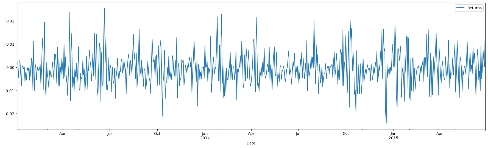
SPY[['Close']].plot(figsize = (22,6));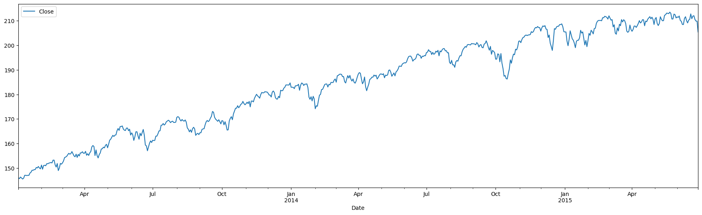
# Train-test split
train_samples = int(SPY.shape[0] * 0.8)
train_set = SPY.iloc[:train_samples]
test_set = SPY.iloc[train_samples:]
print("Training set: ", train_set.shape[0])
print("Test set: ", test_set.shape[0])Training set: 519
Test set: 130model = auto_arima(train_set['Close'], seasonal=True , m = 12)order = model.get_params()['order']
seasonal_order = model.get_params()['seasonal_order']
print('Order = ', order)
print('Seasonal Order = ', seasonal_order)Order = (0, 1, 0)
Seasonal Order = (0, 0, 0, 12)model = ARIMA(train_set['Close'],order = order)
results = model.fit()
results.summary()
start=len(train_set)
end=len(train_set)+len(test_set)-1
predictions = results.predict(start=start, end=end, dynamic=False, typ='levels').rename('ARIMA Predictions')
train_set['Close'].rename('Training Set').plot(legend=True)
test_set['Close'].rename('Test Set').plot(legend=True)
predictions.plot(legend = True)
plt.show()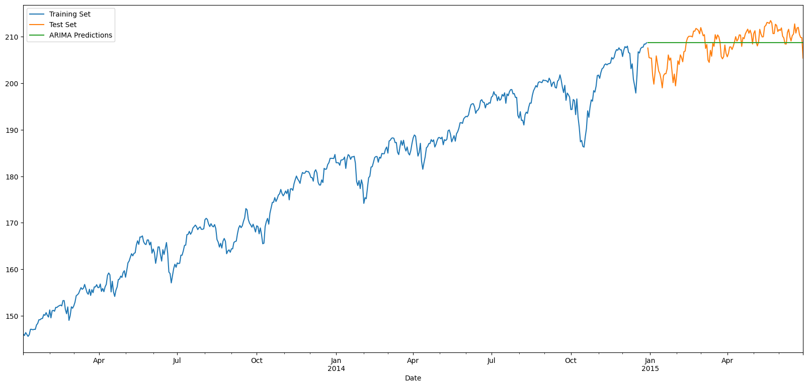
# Calculate Evaluation Metrics
y_test = test_set['Close']
y_pred = predictions
pd.DataFrame({'y_test': y_test, 'y_pred' : y_pred, 'diff':y_test - y_pred})| y_test | y_pred | diff | |
|---|---|---|---|
| 2014-12-30 | 207.600006 | 208.720001 | -1.119995 |
| 2014-12-31 | 205.539993 | 208.720001 | -3.180008 |
| 2015-01-01 | 205.429993 | 208.720001 | -3.290009 |
| 2015-01-02 | 205.429993 | 208.720001 | -3.290009 |
| 2015-01-05 | 201.720001 | 208.720001 | -7.000000 |
| ... | ... | ... | ... |
| 2015-06-23 | 212.039993 | 208.720001 | 3.319992 |
| 2015-06-24 | 210.500000 | 208.720001 | 1.779999 |
| 2015-06-25 | 209.860001 | 208.720001 | 1.139999 |
| 2015-06-26 | 209.820007 | 208.720001 | 1.100006 |
| 2015-06-29 | 205.419998 | 208.720001 | -3.300003 |
130 rows × 3 columns
from sklearn.metrics import mean_absolute_error, mean_squared_error
print('MSE = ', mean_squared_error(y_test,y_pred))
print('RMSE = ', np.sqrt(mean_squared_error(y_test,y_pred)))
print('MAE = ', mean_absolute_error(y_test,y_pred))MSE = 11.971797943699102
RMSE = 3.460028604462556
MAE = 2.769538996769832plt.rcParams['figure.figsize'] = (20, 9)# Create and fit model
from statsmodels.tsa.statespace.sarimax import SARIMAX
model = SARIMAX(train_set['Close'],order=order,seasonal_order=seasonal_order)
results = model.fit()
start=len(train_set)
end=len(train_set)+len(test_set)-1
predictions = results.predict(start=start, end=end, dynamic=False, typ='levels').rename('SARIMA Predictions')
train_set['Close'].rename('Training Set').plot(legend=True)
test_set['Close'].rename('Test Set').plot(legend=True)
predictions.plot(legend = True)
plt.show()# Calculate Evaluation Metrics
y_test = test_set['Close']
y_pred = predictions
pd.DataFrame({'y_test': y_test, 'y_pred' : y_pred, 'diff':y_test - y_pred})| y_test | y_pred | diff | |
|---|---|---|---|
| 2014-12-30 | 207.600006 | 208.720001 | -1.119995 |
| 2014-12-31 | 205.539993 | 208.720001 | -3.180008 |
| 2015-01-01 | 205.429993 | 208.720001 | -3.290009 |
| 2015-01-02 | 205.429993 | 208.720001 | -3.290009 |
| 2015-01-05 | 201.720001 | 208.720001 | -7.000000 |
| ... | ... | ... | ... |
| 2015-06-23 | 212.039993 | 208.720001 | 3.319992 |
| 2015-06-24 | 210.500000 | 208.720001 | 1.779999 |
| 2015-06-25 | 209.860001 | 208.720001 | 1.139999 |
| 2015-06-26 | 209.820007 | 208.720001 | 1.100006 |
| 2015-06-29 | 205.419998 | 208.720001 | -3.300003 |
130 rows × 3 columns
from sklearn.metrics import mean_absolute_error, mean_squared_error
print('MSE = ', mean_squared_error(y_test,y_pred))
print('RMSE = ', np.sqrt(mean_squared_error(y_test,y_pred)))
print('MAE = ', mean_absolute_error(y_test,y_pred))MSE = 11.971797943699102
RMSE = 3.460028604462556
MAE = 2.769538996769832